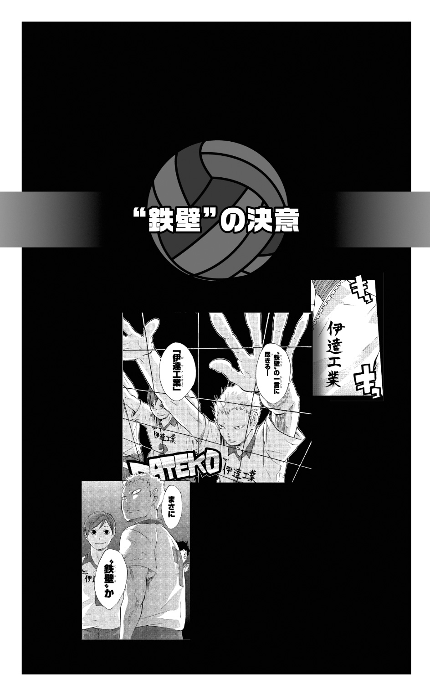

| ハイキュー!! ショーセツバン!! II IH前"壮行式" | |
| 古舘春一 & 星希代子 | |

この本は縦書きでレイアウトされています。
また、ご覧になる機種により、表示の差が認められることがあります。
この作品はフィクションです。
実在の人物・団体・事件などにはいっさい関係ありません。
COTENTS
FINAL HAIKYU QUEST
パン、パンッ。
早朝の澄みきった空気に乾いた音が小気味よく響き、周りの木々に吸いこまれて消える。青葉の隙間からこぼれる朝日のなか、神社で大きく柏手を打ったのは東峰だった。
口のなかでムニャムニャとなにか言い、目を開ける。そして大きな身体を丸めるようにペコリと頭を下げると、地面に置いた学生鞄を手に取って神社を後にした。
しめ縄の結ばれたひときわ大きな木をチラリと見上げ、手水舎の脇を通って小さく急な階段を心持ち駆けぎみにおりていく。
「おう！」
道へ出たところで、東峰はチームメイトたちに出くわした。手の中のメモのようなものを見てブツブツつぶやきながら歩く澤村と、コンビニの小さなビニール袋をぶら下げた菅原だ。通学路に、ジャージ姿の烏野高校バレー部３年生がそろった。
「おはよ、旭」
菅原が挨拶を返してきたが、澤村は真剣にメモを見たままだ。
「大地、それ、壮行式の挨拶？」
東峰が言う「壮行式」とは、ＩＨ予選に出場する部の選手たちを激励するための学校行事だ。各部の主将は、全校生徒のそろった講堂で挨拶をしなければならない。部によっては、部員勧誘のためのパフォーマンスを兼ねる場合もあった。
澤村はその壮行式で、男子バレー部主将として、試合に賭ける意気ごみをスピーチしなければならないのだった。
「ん？ ああ」
澤村がやっと顔を上げた。
「なんだ旭、目当ての巫女さんでもいるのか？」
「ち、違うって！ 神社を通ったほうが近道なんだよ。で、通らせてもらうお礼というか、挨拶しただけで！」
アタフタと否定する東峰を見て、菅原が笑った。
「旭ってそういうとこ、おばあちゃん子っぽいよね」
「見た目はオレオレ詐欺でもやってそうだけどな」
さらりと言い放った澤村の辛らつな言葉に、東峰のガラスのハートがパリンと砕けた。
「なんだよ。そんなことやるかよ」
「そうだぞ大地。知らない人が聞いたら本気にしちゃうよ」
「スガぁ......」
元気に歩き出した菅原、ヨタヨタと追いかける東峰、そしてメモに目を戻した澤村の３人が、雀の鳴き声の聞こえる朝の通学路を学校へ向かう。

「おはようございまーす！」
「あーッス！」
３年生３人が連れ立って第二体育館に入ると、先にきていた後輩たちが次々に挨拶する。
「オーッス」
東峰の挨拶に、西谷が飛び出してきた。
「よしッ！ 旭さん、今日は遅刻じゃないッスね!!」
「ノヤ、あんまそういうこと大声で言うなって、ほら、大地が......」
背中に澤村の視線をビリビリと感じて、東峰は大きな身体を隠すように小さくなった。その姿を見て、菅原が苦笑する。
「旭は常習犯だしな」
「そ、そんなぁ......」
東峰が情けない声を出して菅原を見上げた。澤村はふたりの姿をにらみつけると、体育館中に轟くような声で号令をかける。
「アップ終わったら対人レシーブ！」
マネージャー清水のホイッスルが体育館に響く。部員たちが一斉にコートに散らばり、バレーボールの基礎を１時間に詰めこんだ朝練がはじまった。
さっきまでまだ肌寒さが残っていた体育館が、一気に熱に包まれる。部員たちはペアを作り、交互にボールを打ちはじめた。レシーブ、トス、スパイク、レシーブ......と、ボールの鈍い音が続くなか、日向のあわてた声が響く。
「うわ。あれ、お......っとと」
ボールを落とした日向に、ペアを組んでいた影山が「このボゲ！ ヘタクソ！」と怒鳴った。
よくもまあ朝から怒鳴るだけの元気があるよな......と思った東峰の前で、菅原が「旭、ちょっとごめん」とボールをキャッチしてパスを止めた。そして日向にフォローの声をかける。
「日向、早めにボールの落下点読んで、下入って」
「ハイ！」
真剣な顔でうなずく日向と、その後ろでムスッとしている影山をぼんやりながめていた東峰だったが、戻ってきた菅原がボールを投げると、あわててレシーブを返す。
「......っと！ やっぱスガは、面倒見がいいよな」
「そうか？ でも、怒鳴っても日向上達しないだろ」
そう言ってトスを上げた菅原の隣で、今度は日向もしっかりとトスを上げていた。その姿を目の端でチラリと見て、東峰は内心「へえ」と感心するのだった。
１時間後、朝練を終えた部員たちが部室へ急いでいた。もうすでに、腹が減っただのなんだのと騒ぐものまでいる。そんな騒がしい体育館の入り口に、朝練が終わるのを待っていたように女子バレー部主将の道宮結が顔を出した。
「澤村、ごめん。ちょっといい？」
シャツで汗を拭いていた澤村が、チョイチョイと手を招いて呼ぶ道宮のもとへ「なんだ？」と、駆けていく。
東峰は、体育館のすみで話をするふたりを見た。きっと壮行式の相談でもしているのだろう。そういえば、壮行式って俺たちもなにかやるんだっけ？ っていうか壮行式ってそもそもいつだっけ？
壮行式の日時さえ、東峰はあやふやだった。
「......みんな、いろいろちゃんとやってんだよな」
なんとなく力が抜けていくような気分で床に座りこんだ東峰の頭に、ゴッと固い衝撃があった。
「痛ッ、な、なんだ......？」
顔を上げると、段ボールを抱えた清水が冷たく東峰を見おろしていた。そしてひとこと「そこ邪魔」と言い捨てて、通り過ぎていく。
「なんか、俺って......」
東峰は、涙目で頭のコブをさすった。
パン、パンッ。
うっそうと木の茂った薄暗い境内に朝の光が差しこむなか、大きな柏手が響く。翌朝の神社に、近道ついでに手を合わせる東峰の後ろ姿があった。
「ワイルドな男になれますように......、あ、でもオレオレ詐欺的には見られませんように......」
昨日よりいくらかはっきりそう言うと、ポケットから財布を取り出し、奮発して賽銭箱に５円玉まで入れた。
「どうか、せめて......」
ヒゲと長髪に１８５センチ近い巨体、というビジュアルからは想像もつかない真剣さで手を合わせていた東峰の前に、ヌッと人影があらわれた。
「お前、さっきからなにやってんだ？」
「ヒ、ヒイッ、神様ッ!?」
驚いて腰を抜かしかけ、さらには段差を踏み外した東峰をあわてて支えたのは、もちろん神様などではなく、烏養コーチだった。コーチは呆れながらも心配そうな声で言った。
「おい大丈夫か？ お前、試合前に怪我なんかすんなよ」
「サ、サーセン。あの、烏養さんこそ、ここでなにを......」
「俺は配達だよ」
そう言って指さした先の木陰には、「坂ノ下商店」と書かれた白い軽トラックが停まっていた。荷台に、日本酒やビールのケースが積まれている。
「お神酒......？」
烏養コーチは、ぼんやりとトラックを見ている東峰の肩を力強く叩いて言った。
「お前な......ったく、ワイルドさなんて試合で見せてやりゃいいだろうが。そんなもん、神様がどうこうできるか！」
「え、あ......、き、聞いてたんですか......!?」
耳まで真っ赤にしてヨロヨロと後ずさる東峰に「頼むぞ、エース」と声をかけると、コーチは白い玉砂利を踏んでトラックへと歩いていった。その黒いゴム長靴を履いた後ろ姿に向かって、東峰がやっとのことで返事をする。
「ハ、ハイぃ......」
情けないやら恥ずかしいやらびっくりしたやらで、朝からすっかり意気消沈した東峰は、長い階段をトボトボとおりて学校へ向かった。道路へ出ると、今日も今日とて澤村と菅原のふたりと鉢合わせする。
初夏の澄んだ空気にふさわしく、菅原がさわやかな笑顔を見せた。
「おはよ、旭」
その笑顔に「俺なんかに笑いかけないでくれ......！」と土下座したいような思いに襲われて、東峰は朝の挨拶もそこそこにふたりにたずねた。
「あのさ......、俺って、本当に情けないかな......」
「ん？ 情けないっていうか、高校生には見えないかな」
澤村のとぼけた答えに、菅原も笑いながら調子を合わせる。
「日向と並んでるとこなんて、親子みたいだしね」
「『あれ、今日ＯＢがきてる』って思ったら旭だったりな」
「え！ そこまで老けてないだろ！ なあ！」
あわてる東峰を見て、澤村がなおも続けた。
「......ここだけの話、烏養コーチのほうが若く見えるぞ」
「マジ!?」
すっかり青ざめて足をとめた東峰を見て、菅原が笑った。
「ほら、大地もそろそろ冗談はおわり。旭が本気で落ちこむからな」
「俺まだ、17なのに......」
「だから冗談だって！ すぐそうやって真に受けない！ ほら、いくぞ！」
菅原がすっかり丸まった東峰の背中を叩くと、後ろから女子の明るい声がした。
「おはよー！」
女子バレー部主将の道宮だ。男子３人が、三者三様の表情で「おう」と振り返る。笑顔、苦笑、そして憔悴。道宮は「うわ」と驚いたが、気を取り直すと澤村を見上げた。
「あのさ、壮行式の挨拶。野球部なんかが面白いネタいろいろ仕込んでるってチラッと聞いたんだけど、ウチらどうしよっか？ なんか考える？」
「ん？ 普通にやればいいよ。バレー部はバレー部だし、はしゃぐのは勝ってからだろ」
「やっぱりそうだよね。澤村、そう言うと思った！」
道宮がクスクス笑い、澤村が少し不思議そうに「そうか？」と首をかしげる。菅原も「大地って、たまにお父さんみたいだもんな」とうなずく。
「お、お父さんって......」
菅原の言葉に少なからずショックを受けた澤村を見て、東峰がつぶやいた。
「大地はウチの大黒柱だもんな。ちゃんと高校生に見えるのにさ......」
うつむいてトボトボと歩き出した東峰の背中に、なにか声をかけようとした菅原だったが、思い直したようにぎゅっと口をつぐんだ。
「どしたの？ 菅原」
のぞきこんで訊く道宮に、菅原が笑顔で答える。
「いや、なんでもないよ？」
「ふうん。......男子ってさ、いっつも楽しそうだよね」
「子供なんだよ」
菅原が苦笑すると、道宮も笑った。
「それ、言わないでおいてあげたのにさ」
そして時計を見ると「あ、いけない。急がなきゃ！ ちょっと先いくね！」と走っていった。そのジャージの後ろ姿を見送りながら、菅原がつぶやく。
「いつも楽しそう、か......」
部室に荷物を置いた後、暖簾でもくぐるような調子で「うぃーっす」と体育館に顔を出した東峰に、朝一で西谷からのダメ出しが飛んできた。
「０点！ 覇気がなーいッ!!」
「え、ええ？」
驚く東峰に説明もなく、西谷は腰に手を当てた仁王立ちで日向に命令する。
「翔陽、手本!!」
「え、あ、ハイ！」
素直に体育館の外に出ていった日向が、少し恥ずかしそうにチラリと顔を出す。そしてグッと両手の拳を握ると、体育館の中へ向かって大きな声で挨拶をした。
「オハヨーゴザイマスッ!!」
「よーし、合格ッ！」
西谷にバンッと背中を叩かれ、日向が「おれ合格！」とニヤける。田中もやってきて、日向の頭を「よくやった」と叩いた。
東峰が体育館の入り口に立ったままポカンと眺めていると、西谷が言った。
「はい、次、旭さん、もっかい！」
「な、なんなんだよ......」
なんだか訳がわからず腰の引けている東峰をジッと見て、じれったそうに西谷が怒鳴る。
「旭さん！ うぃーっすとか言っててボールとれると思ってんですか!!」
「うッ......、そ、それは......スマン......」
すっかり小さくなった東峰をそのままに、西谷が田中を呼んだ。
「次、龍！」
「おーしっ、いくぜーッ！」
元気よく駆け出していった田中が「オッハヨーゴザイマッスル!!」と雄叫びをあげて転がりこんできた。
「よし、10点満点！」
西谷の採点に、日向が「いーなー、10点」と羨ましがる。
そのあいだ、影山は体育館のすみでひとり黙って頭上トスを繰り返し、その影山から遠く離れた場所で月島と山口が黙々と壁打ちをしていた。
「あ、その挨拶、俺もやる！」
と言ったのは、愉快そうに見ていた菅原だ。静かにストレッチをしていた縁下を「いっしょにやるべー」と引っ張って扉へ向かう。が、そこに外からヌッと澤村があらわれた。その般若のような顔に、菅原の顔も固まる。
「あ、だ、大地、おは......」
「オハヨー!!」
体育館全体がビリビリと震えるような大声で、澤村が挨拶した。
「ハイ！ 大地さん、１００点！」
西谷と田中が声をそろえて採点し、澤村が「なにやってんだ」とあきれる。
「挨拶チェックです！」
「１日のはじまりは元気な挨拶からなので！」
そして西谷と田中、１年生たちはパッと散らばり、急いで練習の準備をはじめた。
その様子を確認すると、澤村はどこか恨めしそうに隣の菅原を見た。
「......スガまでいっしょに遊ぶことないだろ」
「ゴメンゴメン、なんかこう、テンションあがっていいかなーと思って」
「まったく」
小さくため息をついた澤村の陰で、すっかり消え入りそうになってしまった東峰がつぶやいた。
「大地は１００点......」
そのどんよりとした顔に、澤村も「うわ」っと驚く。しかしすぐに気持ちを立て直し「旭もさっさと練習!!」と怒鳴った。東峰が、肩を落としたままトボトボとコートへ入っていった。
「俺、０点......」
東峰は放課後の教室で、机に肘をついて座っていた。そろそろ教室の掃除もはじまるし、早く部活にいかなきゃな......と思いながらも、かれこれ数分そのままの姿勢でいる。
ぼんやりとしているうち、開いた扉の向こうに、廊下を歩いていく澤村と菅原の姿がチラリと見えた。
「うわ」
思わず、隠れるようにペタリと机に突っ伏す。別にふたりから隠れなければいけない理由もないのだが......。
突っ伏したまま、東峰は思った。
あいつら一応進学クラスなのに、部活もちゃんと本気でやってすごいよな......。いや、俺だって練習も試合も本気だけどさ。西谷に言わせりゃ０点だけど。でも俺ももう３年生だし、進学とか就職とかこの先どうしよっかなー。いや、進学するつもりもないけどさ。なんかもう、この強面を活かして、オレオレ的な世界にデビューしたほうがいいんだろうか......。いわゆる適材適所ってやつで......。
「......もしもし、オレオレ......って、ダメだよ、無理だよ。こんなことしたらバーチャンに顔向けできないって！」
東峰は、両手で顔をおおった。
「将来かあ......」
急に背中にのしかかってきた将来の重さに耐えかね、さらにグッタリと机に貼りついたところで、視界の端、床をササッと走る小さな影に気づいた。
「えっ......今の......」
東峰の顔から、サッと血の気が引く。
「出た！ ゴキブリ！ ゴキブリだーッ！」
東峰の大きな叫び声に、放課後で人が少なくなっていたとはいえ、女子の姿もまだ見られる教室は途端にざわめいた。
「え、やだ！」
「なんでゴキブリ!?」
「ちょっと東峰、捕まえてよ！」
「え、俺!? ムリムリムリムリ、俺そういうのムリだから!!」
立ち上がってブルンブルン首を振る東峰に、隣の机の男子が、おずおずと声をかけてきた。
「......あのさ、東峰」
「あ、頼む！ やっつけちゃって！ やっちゃって！」
両手で顔を覆って騒ぐ東峰を見て、同級生がため息をついた。
「それさ、ゴキブリじゃなくて僕の消しゴムなんだけど......」
「え？ 消し......ゴム？」
まさかと思いながらもおそるおそる床を見ると、そこにはなんの変哲もない消しゴムがひとつコロンと転がっているだけだった。
「え？」
「あのさ東峰、今の、僕に対する嫌がらせとかじゃないよな」
「チガウチガウチガウチガウ！」
ふたたび首をブルンブルン振って否定すると、東峰は「お騒がせしました......」と頭を下げてコソコソと教室を抜け出した。
「消しゴムに怯えてるようじゃ、オレオレ的アウトローは無理だよな......」
天職かと思われたオレオレ界への道も断たれ、薄暗い玄関を抜けてトボトボと外へ出ると、午後の柔らかい日差しに包まれる。東峰は古いアスファルトの裂け目から生えた雑草を見ながら、ゆっくりと部室へ向かった。
もう他の部員はみんな体育館にいるのだろう。誰もいない部室に荷物を置き、ひとり着替えて体育館へ向かう。
「オス!!」
少し緊張して、心持ち大きめの声で挨拶する。すると待ちかねていたように影山が駆けてきて頭を下げた。
「トスの練習お願いします！」
「おう、いいよ。ちょっと待ってな」
そう言って入ったコートの、ネットを挟んだ向こう側では菅原が日向に声をかけた。
「じゃ日向、はじめよっか」
「ハイ！」
ギュッとボールを抱えた日向が、元気に返事をする。連休の合宿から、菅原と日向も速攻の練習をはじめているのだった。最初は当然のようにガタガタだったふたりのプレイも、ここのところ急激に息が合ってきたように見える。日向の人並みはずれた運動神経とガッツ、そして菅原の観察眼あってのことだろうか。
日向にアドバイスしながら練習している菅原を「やっぱ、教えるの上手いよな」と、見ていると、急かすような影山の声がした。
「東峰さん、お願いします！」
「ああ、すまんすまん」
振り返ると、山口がボールを出し、影山が弓なりにトスを上げた。東峰は助走をつけ、踏みこむ。振り上げた大きな手のひらが、ボールの中心を捉えた。
そのときには、進路のことも、気の弱い「０点」の自分も、頭にはなかった。ただ、ボールがあるだけだった。
「旭さん！ さっきのトス、どうスか!?」
「え？ あ、ああ......、いいよ」
コートの外に出てドリンクを飲んでいた菅原は、影山のいきおいに押されてどこか引いているようにも見える東峰に気づき「うーん」と首をひねった。隣の日向が心配そうにきいてくる。
「あの、どうかしたんですか？」
「ん？ いや、なんでもない、大丈夫」
笑って答えると、その日向の後ろに、思案顔の烏養コーチが見えた。その目はやはり東峰の様子を見ているようだった。
「うーん......」
どこか難しい顔をしたコーチと菅原の目が合ったが、ふたりはどちらからともなく、バツが悪そうに目をそらした。
さらに、さらに翌朝。いつもと同じように境内を通り抜け、途中で「挨拶」しようとした東峰は、見慣れた後ろ姿に気づいた。ジャージ姿で静かに手を合わせているのは、菅原だった
「スガ......？」
驚いて声をかけると、菅原が振り返る。そして少し照れながら「家族みんな元気で......無病息災ってやつ？」と笑うと「よっ」と、ショルダーバッグをかけなおした。
「ずいぶん普通の願い事だな」
「試合のことは、神頼みってわけにはいかないからな」
「そうだけどさ」
そして、口をつぐんだふたりの間に、ぎこちない空気が流れた。
ここで俺を待ってたんだよな。ただただ無病息災祈願にくるわけないもんな。でも一体なんの用だろ......。俺、なにかしたかな......。
東峰が、居心地の悪さをごまかすように、意味もなく「ハハ......」と笑ったとき、菅原は意を決したように口を開いた。
「インハイ予選、緒戦を勝ったら伊達工だな」
「え？」
思いがけない言葉に一瞬とまどったが、頭はすぐに３月の伊達工業戦を思い出した。まるであの日の試合後のコートに戻ったように胸がグッと詰まる。東峰は、くちびるを嚙んだ。
「......そうだな」
つい３か月前のことだ。東峰は伊達工業との試合で『鉄壁』と恐れられるブロックに徹底的にマークされ、スパイクを封じられた。結果、ストレート負けという苦い試合となり、その後、責任を感じた東峰は部活を避け、西谷もとばっちりのように部活禁止処分となったのだった。すべて、自分の弱さと甘さが招いたことだ。しかし......。
「......でもな、俺、やっぱ情けないし、大丈夫かなあ......」
頭を抱えた東峰に、菅原が真剣な顔で応えた。
「なに言ってんだよ。俺だっていろいろ至らないところはあったし、それに......」
「でもさ」
東峰が顔を上げ、菅原の言葉を遮った。そして、ちょっときまり悪そうに目をそらして言った。
「お前ら、ちゃんと『３年生』してるからさ」
「え？」
菅原がきょとんとした顔をする。東峰は立ち上がってまくしたてた。
「だってさー、壮行式の挨拶とか、俺、絶対できねーし！ 大地なんて自分たちのことだけじゃなくて、女バレの相談とかにも乗ってさ！ スガも、後輩たちのことちゃんと見てまとめてるし、ふたりともきちんと部長と副部長やってるっていうか。それなのに俺、自分のことでいっぱいいっぱいだしさー！ なんか、俺だけかっこわるいっていうか！ スガもそう思うだろ!?」
大きな身体ですがりつくように詰め寄ってくる東峰に、菅原は半分驚きつつも呆れた。
「ええっ、かっこわるいとか、そんなこと!? 俺、伊達工との再戦でプレッシャー感じてるのかと思って心配で!!」
そこまで言うと、しょんぼりと落ちこんでいる東峰に気づいて「ごめん、そんなこととか言って」と謝った。そして、まっすぐに東峰を見据えて言う。
「でもさ、旭」
「ん？」
「しっかりしてるって言うけど、大地だって、自信がないから......、不安だからこそ、いつもコツコツ真面目にやってるんじゃないかな」
「え？」
東峰は、顔を上げた。その場で一生懸命考えながら話している菅原の表情は、どこか菅原自身に言い聞かせているようにも見えた。
「そうだよ、大地だってプレッシャーがないわけないよ。うん。そんなわけないって。旭に厳しいのもさ、きっと、後輩たちをどうまとめようとか、そういう主将的な悩みもあってのことじゃないかな」
「あの大地に、悩みが？」
「誰だって完璧じゃないしさ、悩んだり......そういうの、ないわけないべや。旭はさ、まあ、打たれ弱いとこは正直あるけど......、でも、１年のときからずっといっしょにやってきた仲間だし、信頼してるからこその、あの態度だと思うよ」
「うーん」
しかし、東峰の頭の中で、澤村が「黙れ、このヒゲちょこ」とにらむ。菅原も、ちょっと自信なさそうにつけ足した。
「たぶん、ね......」
「だと、いいな......」
ふたりは顔を見合わせると、小さく笑った。そして東峰が、少しスッキリしたような表情で空を見上げた。早朝の薄い青がどこまでも続くような空に向かって、軽く伸びをする。
「でも、そうか、大地もプレッシャーか」
「そうだよ、俺だってさ......」
「ん？」
東峰は、菅原を見た。その苦い顔に気づいてハッとする。
「俺だって、伊達工の試合、今度こそ勝ちたいよ。怖いけど、でも戦いたい。......もし自分が出られないとしても、最善を尽くして挑みたいと思ってる」
「スガ......」
そうだ、伊達工に負けたのは俺だけじゃない。菅原も澤村も、そして田中や西谷だって、全員がチームの敗北を自分の責任として、背負っているのだ。悩みを、プレッシャーを、負い目を抱えているのは俺だけではない。
澤村はチームをまとめ、菅原はチームメイトをケアすることを選んだ。俺はどうしたらいい。
バレーボールはチームプレイだ。みんなの想いを乗せて繫がれたボールが、これからも集まってくるのだ。その想いを、今の俺は受けとめられるのか。こんなに情けない俺に、その資格があるのか。
ひとりじゃないから、チームだから助け合えるし、高め合える。
でも、と東峰は思った。
コートに立てば、最後に自分を奮い立たせられるのは自分だけだ。チームメイトのやさしさに甘えてばかりはいられない。
東峰が、沈黙を破った。
「勝とうな」
「......旭」
顔を上げた菅原に、東峰が言った。
「お前らだけに、いいとこ取られちゃたまらないからな。......絶対、決めるぞ」
「旭、ぜんぜん情けなくねーべや」
「一応、烏野のエースだからな」
その力強い言葉とは裏腹に、東峰は少し自信なさそうに笑った。
「もっと堂々と言えよ、そういうことはー。一応じゃなくてさ！」
菅原が笑いながら東峰の腹をこづいた。そして、急に真剣な顔をしたかと思うと、小声で言い足す。
「ていうか、さっきの話......大地には内緒な。怖いからさ」
ふたりは顔を見合わせて笑いながら境内を後にした。ジャージ姿で階段を駆けおりるふたりの頭上高く、重なった濃い緑が風に揺れていた。
そうして道に出ると、澤村がひとりで歩いてくるのが見えた。
「おう！ めずらしいな、ふたりいっしょか」
いつもどおりに挨拶する大地を見て、ふたりはつい吹き出してしまう。
「なにがおかしいんだよ」
いぶかしげな顔をする澤村に、菅原が笑って声をかけた。
「なんでもないよ、いこっか！」
３人が連れ立って歩き出すと、マンションの植えこみから数羽の鳥が飛び立った。その影を、東峰がまぶしそうに見上げた。
その日の放課後、練習も中盤にさしかかったころだった。
「東峰」
烏養コーチの声に、汗だくの東峰が振り向く。続くコーチの言葉は、思いがけないものだった。
「お前、バックアタックは得意か？」
「え？」
東峰が答えに詰まっていると、コーチは「影山！ 日向！」と声をかけた。その呼びかけに、１年生ふたりがボール拾いを中断して走ってくる。
「ハイ！」
「ッス！」
３人が集まると、烏養コーチはおもむろに作戦ボードを抱えた。
「今年の烏野には『囮』がいる」
日向がビクンと身体を震わせると、コーチはニヤリと笑った。
「それも、『最強の囮』だ。いいか、お前ら変人コンビが速攻を印象づける。そこまではいつもと同じだ」
ふたりが黙ってうなずく。日向の緊張が伝わってくるようで、東峰は自分まで胸が苦しくなるような気がした。そしてコーチが続ける。
「そこからの攻撃の選択肢に、これからは......エースのバックアタックが加わる！」
ゴクリと、東峰がツバを飲みこんだ。
「......なんか、かっこいいッ!!」
日向が声を上げた。隣の影山が「ふむ」とうなずく。きっと、もう頭の中で攻撃のシミュレーションをはじめているのだろう。
顔を上げたコーチが、ふたたび東峰に訊く。
「やってくれるな？」
「ハイ！」
東峰の大きな声が第二体育館に響いた。満ちていたボールの音が、とぎれる。
西谷と田中が「なんスか、旭さん!?」と、駈け寄ってくる。少し心配そうに様子をうかがっていた澤村と菅原が、ホッとしたように顔を見合わせる。
コーチの作戦を聞いているうち、そして影山と日向の表情を見ているうちに、東峰はぼんやりとした、しかし確かな手応えのようなものを感じはじめていた。
「バックアタック......！」
これまで自分の前に、重く、高く立ちはだかっていた鉄壁の向こうに、チラリと一条の光が見えた気がした。
FINAL HAIKYU QUEST
LV.1「持ってこい」
この地に、人心を操る大王が君臨するようになって幾星霜。人々は大王が気まぐれで流布させる風説に怯え、言葉の裏を読み合い、希望も笑顔も失って生きていた......。
しかし、この荒れ果てた地に少年が立ち上がった。若干15歳の勇者、日向翔陽だ。
「だってさ、修業して冒険して大王様倒しにいくとか、やっぱ憧れるじゃん！」
「お前はそれだけで旅してたのか......」
勇者の言葉に、弓使い影山が呆れた。
影山は、かつては大王のもとで一個師団を従えながらも、兵士たちの反乱により追放された過去を持つ。さらに、大王の側近となった友人を救いたいという白魔導士孤爪、謎の格闘家青根、古くから大王の右腕だったが「なんかあいつムカつくから」という理由で城を飛び出した戦士岩泉らとともに、勇者日向はテクテクと荒野を旅していた。
「あ！ 出た！ モンスターだ！」
一行の前に、１匹の小さなスライムがあらわれた。獅子は兎をも全力で狩るという。５人はそれぞれ剣、弓、杖、拳を構えて、スライムを囲んだ。
「持ってこーい！」
日向が大きく叫んで大地を蹴り、天高く舞った。影山の目がキラリと光る。日向のスピードと跳躍力を一瞬で読み、高くあげた手のひらを狙って弓を引いた。
「......って、待てよ！ おれにロックオンかよ！ 危ないだろ！」
日向があわてて着地し、影山に食ってかかる。
「お前が、持ってこいって言ったんだろうが！」
「それは......だって、おれらいっつもバレーしてるじゃん！」
「今、そういうこと言うな！」
日向と影山が言い争っていると、ドゥクシッと地味な音がした。
「いてえ！」
その声に振り向くと、スライムの攻撃で岩泉が地味にダメージを負っていた。......と思ったが、岩泉は地面に倒れたまま動かない。孤爪が、そっと岩泉に触れてみる。
「......あ、死にそう」
「え!? 噓！ この話って、死んだりするアレなの!?」
「なにかあっても教会とかで生き返るかもしれないし、一応連れていこうか......」
そう言って、孤爪が青根を見上げた。青根は黙ってうなずき、やたらと重い甲冑を着こんだ岩泉をよいしょっと背負った。
〈続〉
「澤村！」
第二体育館へ入ろうとしていた男子バレー部主将は、急に声をかけられて振り向いた。制服のスカートをひらりと翻して駆け寄ってきたショートカットの女子生徒は、女子バレー部主将の道宮結だった。
「あのさ、壮行式のことなんだけど！」
男子が練習に入る前に、と急いできたのだろう。澤村より頭ひとつ分ほど小さな道宮は、少し息をきらして頰を上気させている。ジャージに着替えた澤村と違ってまだ制服のままなのは、日直か掃除当番でもやっていたか、また誰かの頼み事を引き受けていたのかもしれない。
息を整えた道宮は、澤村を見上げて続けた。
「やっぱり女子が先にやるよ、挨拶」
「俺はどっちでもかまわないよ」
「毎年、男子のほうが盛り上がるからさ」
「そうか？」
ふたりが話している「壮行式」とは、ＩＨ予選に出場する選手を激励するための行事で、各部の主将は全校生徒のそろった講堂で挨拶をしなければならない。部によっては、部員勧誘のためのパフォーマンスを兼ねる場合もあった。
３日後に迫った壮行式を前に、主将たちは部の伝統とプライド、勝利への想い、そして少々のプレッシャーを胸に準備を続けていた。
５月の木漏れ日のなかで壮行式の相談をしている主将ふたりを、体育館の中からじっと見ているふたつの影があった――
「......壮行式の話だろうな」
「ああ」
言わずと知れた田中と西谷が、開け放たれた体育館の出入り口から主将たちを眺めていた。タンクトップから出た腕を組んだ田中が、去年の壮行式を思い出したように武者震いした。
「あの、全校生徒に期待されてる感じがたまんないよな！」
「ああ、あれは燃えるぜ」
隣に立つ西谷が真剣な顔でうなずくと、田中はツバを飛ばしかねない勢いで熱っぽく語った。
「しかも、女子の応援もある！ 女子の声援なくしてなにが壮行式だ！ もっともっとキャーキャー熱く応援されてーよな！ そうしたら......絶対負けられねえし！」
「そのとおりだぜ！ 龍!!」
「ノヤっさん!!」
ガッシリと固い握手を交わすふたりを、しゃがんでシューズの紐を結んでいた縁下がチラリと見上げた。
「しょーもない......」
縁下がつぶやいたとき、床に勢いよく打ちつけられたボールの音と日向の元気な声、そして影山の怒号が体育館に響いた。
「ごっめーん！」
「ボゲ！ ヘタクソ！」
この１年生ふたりは、毎日誰よりも早くやってきては自主練習に励んでいる。ＩＨ予選を前にしてさらに熱が入っているようで、今日も相変わらずやる気にあふれて騒がしい。
「おい、俺が見てないからってサボるなよ」
いつの間に道宮との相談を終えたのか、田中の坊主頭を澤村が後ろからつかんだ。田中がアタフタと言い訳をする。
「そ、そんなんじゃないッスよ。壮行式に向けて意気を上げてたんですってば！」
澤村の登場で、第二体育館が一気に活気を帯びた。今から放課後の練習がはじまるのだ。準備を終えた縁下の足元に、コロコロとボールが転がってきた。
「すみませーんっ！」
日向がボールを取りに駆けてくる。
「ほら！」
ボールを投げてやると、縁下は「俺も、がんばろ」と立ち上がった。そこへ田中がスッと近寄ってくる。なにかと思う間もなく、田中は耳元でささやいた。
「練習終わったら、坂ノ下商店に集合な」
「え？」
聞き返した縁下だったが、田中はもうコートへ駆け出していた。
「さて、お前らに集まってもらったのは、言うまでもないッ！」
田中がドンとテーブルを叩くと、それまでガヤガヤと雑談していた２年生がフッと黙った。テーブルクロスに貼られた「さわぐな」の紙がひらりと揺れ、アイスの冷凍庫がブン......と鳴る。
練習後、閉店間際の坂ノ下商店には２年生全員が集められていた。田中、西谷、縁下、木下、成田の５人が店内のテーブルについている。レジカウンターの向こうに座っているのは烏養コーチではない。コーチの祖母だろうか。
全員を見回した田中が、不敵な笑みを浮かべてきり出した。
「俺たち２年で、壮行式を盛り上げようと思う！」
思いがけず真っ当な田中の言葉に、縁下は内心胸を撫で下ろした。急に呼び出されたときは、もっと面倒な、訳のわからないことに巻きこまれるんじゃないかと正直少し不安だったのだ。縁下は訊いた。
「いいんじゃない？ でも、なにやるんだよ」
「大地さんの挨拶を、俺たち全員で盛り上げたいんだが......」
田中の言葉に、ガリガリ君ソーダ味をくわえた西谷がうーんと考えこむ。
「盛り上げる......応援だよな。応援......といったら、応援歌か？」
「それだ！」
田中が立ち上がり、木の椅子がガタンと音をたてた。烏養コーチが店番なら、すぐに「うるさい、帰れ！」と蹴り出されているだろう。しかしレジカウンターに座っているおばあさんは、眉ひとつ動かさない。
「俺たち５人でバンドやろうぜ！」
田中の提案に、西谷も身を乗り出した。
「いいじゃねーか！ じゃあ俺はドラムだ！」
「任せた、俺はギターな！」
そう言うが早いか、エアドラムとエアギターで盛り上がりはじめたふたりを見て、木下が訊く。
「え、意外。お前ら楽器できるの？」
「できねーよ。でも気合いでカバーできるだろ！」
田中が真顔で即答すると、西谷も胸を張る。
「音楽はハートだからな！ 勝利への熱い想いがあれば問題ないぜ！」
そう言って指をクルクル回しているのは、ドラムスティックを回転させているつもりなのだろう。あまりにもデタラメなふたりに縁下の声も大きくなる。
「いやムリだろ！ っていうか、主将の応援ってそういうことじゃないだろ!?」
「そっか？ じゃあ、別の作戦で攻めるか」
田中はあっさり引き下がると、椅子に座り直した。拍子抜けした縁下だったが、田中も西谷も肝心の楽器ができないのだから、まあ食い下がりようもないのだろう。
「まったく......」
呆れかえる縁下の後ろで、レジカウンターに置かれたポットがポコポコと沸騰する音をたてた。腕を組んで考えこんでいた田中がふたたびきり出す。
「あの大地さんのことだ、きっと壮行式も渋く決めてくれるに違いない......。でも！ やっぱり勝負前に他の部に埋もれるわけにはいかねー！ 戦いってのは、カブいてナンボだろ!?」
「龍の言うとおりだ、勝負の世界は目立ったモン勝ちだぜ！」
田中と西谷の勢いに押されるように、坊主頭の成田が「まあ、そういう面もあるかもな」とうなずいた。気を良くした田中が身振りも大きく続ける。
「俺たちが、こう......そろいのＴシャツでも着て大地さんの後ろに並ぶだろ？ それでド派手に盛り上げれば、野球部や空手部なんかのパフォーマンスにも負けやしないはずだぜ!?」
「確かに、他の部には負けたくないよな」
木下がうなずくと、田中と西谷が「だろ！」と立ち上がった。
「よーし、決まった！ 俺たちで、他の部が絶対考えつかないようなステージを作ろうぜ!!」
「最高のステージにしような!!」
ふたりの勢いにつられて、木下と成田もうっかり「おう！」と答える。
「龍、この作戦、１年抜きでやったらあいつらに怨まれるぞ！」
「ああ、抜かりはないぜ！ あいつらに手伝ってもらうことは山ほどあるからな！」
「早く頼まないと間に合わないんじゃないか？」
「もう時間がないからなあ」
やけに活気づくチームメイトたちを見て、縁下があせる。
「え、みんな......本気なのか......？」
いつの間にか、縁下以外の２年生全員が、すっかりこの作戦に乗り気になっていた。
縁下は、にわかに盛り上がるチームメイトたちを見て思った。いつもみんな、なんだかわからないうちに、田中と西谷の勢いについつい巻きこまれてしまうのだと。そして、今、自分はその現場からうっかり逃げ遅れてしまったのだと......。
「よーし、今日はおごるぞ」
翌日の練習後、澤村は着替えている部員たちに声をかけた。人いきれのする部室が一瞬静まり返り、１、２年生の視線が主将に集まる。そして、いつもなら餓えた獣のようにギャアギャアと飛びついてくる後輩たちが、どこかよそよそしくサッと目をそらした。
「ん？ どうした」
不自然な部室の様子に、澤村が訊く。すると田中が勢いよくビシッと敬礼した。
「いや、サーセン、今日は用事があるんで帰らせてもらいます」
「俺も、また今度！」
そう言って西谷が続くと、他の部員たちも、とってつけたような断りの台詞を口にしながら、パラパラと部室を出ていった。最後に、日向がペコリと頭を下げて「し、しつれいします！」と帰る。
「あ、ああ......」
澤村が片手を上げて応えると、ぱたんと静かにドアが閉まった。３年生だけが取り残された部室で、東峰と菅原が顔を見合わせる。
「なんなんだ？」
「めずらしい日もあるもんだな」
そして、澤村が少しさみしそうにつぶやいた。
「......俺、後輩たちに嫌われてないよな？」
「あぶなかったぜ......」
坂ノ下商店に入ってきた田中が、坊主頭をぬぐった。店内にはすでに、昨日の面子に加えて１年生も全員集まっている。田中が「練習のあと、坂ノ下商店に集合な。先輩たちには気づかれるなよ」と声をかけたのだ。
広いわけではない店内に９人もの部員が集まり、店を占拠する形になっている。椅子が足りないために、１年生の４人はテーブルの周りに立っていた。部員たちは、それぞれアイスやジュース、プリンに肉まんなど、思い思いの食べ物を手にして田中が話し出すのを待っていた。
しかし田中はもったいをつけるように言う。
「......一応、誰か外で見張っててくれるか？ 大地さんたちが通りかかったら、店に入らないようにうまいことやってくれ」
「じゃあ、俺が......」
「頼んだぞ」
手を挙げた木下が肉まんを持ったまま外に出る。自動ドアが閉まるのを確認すると、田中はエヘンと咳払いをしてからようやく本題に入った。
「さて、お前らに集まってもらったのは、言うまでもないッ！」
ドンとテーブルを叩き、テーブルクロスに貼られた「さわぐな」の紙がひらりと揺れる。思わず１年生たちが息をのむと、冷凍庫のモーター音が店内に響いた。そのうなりを、熱を帯びた田中の声がかき消す。
「明後日の壮行式だが！ 俺たち１、２年で大地さんの挨拶を盛り上げようと思ってる！」
その言葉に、１年生がざわめいた。
「盛り上げるのはいいですけど、なにやるんですか」
「月島、その質問は想定済みだ」
眉をひそめてなにか言おうとした月島を片手で制すると、田中は続けた。
「お前らは表に立たなくていい。ステージは俺たちセンパイに任せろ。......その代わり、裏方として探してもらいたい物がいくつかある」
「探し物？」
日向が訊くと、田中は手元のメモを見ながら答えた。
「そうだな......。日向と影山、お前らはＣＤラジカセとメガホン。月島と山口はポンポンとスポットライトだ」
「......ぽんぽん？」
首をかしげた山口に、西谷が両手を振り回してチアの真似をする。
「ほら、チアリーダーたちが持ってるキラキラした丸いやつだよ」
「ああ、あれかぁ......」
山口がうなずいた。
「探すってことは、部費で買うわけじゃないんですか？」
影山の質問に、田中は待ってましたとばかりにパチンと指を鳴らした。そして、まだ話がつかめていないのだろう、キョトンとしている１年生たちの顔をぐるりと見回すと、重々しく喋り出した。
「このミッションはトップシークレットだ、部費なんて使えねえ。なんてったって......大地さんの晴れ舞台を、〝サプライズ〟で盛り上げようってんだからな!!」
「〝サプライズ〟ぅ!?」
それまでポカンとしていた日向の表情がパッと輝き、逆に月島の顔が一段とくもった。
「それ、嫌がられるんじゃ......」
月島のつぶやきを無視して、田中は続けた。
「知ってのとおり、俺たちに金はない。あるのは部への忠誠心と勝利への想いだけだ！ 今言ったものは、学校内で借りてきてほしい！」
「ええっ!?」
驚く１年生に、西谷がガリガリ君をガリッとひと口かじって言った。
「学校の備品とか他の部活の道具とか、きっとどこかにあるはずだろ？」
「まあ、そうですけど......」
渋々といった様子で月島がうなずいたとき、日向が気づいた。
「あれ？ 壮行式に使うってことは......」
「そうだ」
田中が真剣な顔つきで、１年生のひとりひとりを見た。
「リミットは明日の夜までだ。遊んでる時間はないぞ！」
「ええええっ!?」
そのとき、入り口の自動ドアが音をたてて開いた。全員がハッと息をのむ。しかしドアから現れたのは、見張りに出ていた木下だった。
「今、先輩たち通り過ぎたから、もう大丈夫」
「おー！ なんか刑事ドラマみたいでかっこいい！」
盛り上がる日向と山口、そして真剣な顔でメモを取る影山を見て、縁下は白いテーブルクロスをカリッと爪で引っ搔いた。
「本当にこれでいいのか......？」
店を出ると、外はもうすっかり暗くなっていた。坂道をおりる緩やかなカーブに沿って、街灯の光がポツンポツンと連なっている。１年生たちを帰したあとも、２年生にはまだまだやらなくてはいけないことがあった。さっきも言ったとおり、遊んでいる暇はないのだ。
「８時だろ？ まだ開いてると思うんだよな」
５人が向かっているのは、西谷御用達のＴシャツ店だった。いつも西谷が着ている少々個性的な熟語Ｔシャツは、そこで作っているものらしい。
「これで、あの店も流行るかもしれないな！」
「は、流行るかな......」
縁下が少し困ったように答える。
練習の疲れを感じさせずにズンズン歩く西谷のあとについて、２年生たちは閉まったシャッターのほうが目立つ夜の商店街を途中で曲がり、さらに奥まった路地へと進んでいった。薄暗い街灯が、道の淋しさをさらに際立たせている。
そうしてたどり着いたその店は、外から見た限りは普通の印刷所のようだった。キテレツなＴシャツを作っているようには見えない。
「サーセン！」
ガラリとガラス戸を開けて、西谷が慣れた様子で入っていく。同時にドアホンがピンポンピンポンと２回鳴った。
「いつもの兄ちゃんかい？」
薄暗い店の中から、返事があった。
「ああ、俺だ！ 明後日、学校でＩＨ予選の壮行式があるから、全校生徒の前で俺たちの決意をビシッと見せてやりたいんだ！」
「明後日か......」
その歯ぎれの悪い返事は、悪い予感をふくんでいた。
「悪いね、実は朝から機械の調子が悪くて、明日も直るかどうかわからんのよ」
倉庫のように大量のＴシャツが積み上げられた店の中から、店主らしき男性が申し訳なさそうに出てきて言った。
「そ、そんな......！」
「マジか......！」
西谷と田中が、同時にうめいた。縁下は店主のＴシャツになんと書いてあるか気になってのぞいてみた。
「な、なんだよそれ......」
無骨な作業用エプロンの下に見えたのは『凶』の一文字だった。
人通りの少ない夜の商店街を、田中と西谷がとぼとぼと歩いていた。お互いの顔も見ずに、足元だけを見て言う。
「大地さんによろこんでもらいたかったな......」
「絶対盛り上がったよな......」
チームのテンションを左右するふたりが落ちこんでいるせいで、みんなつられるように黙りこんでいた。居酒屋からもれてくる笑い声に、誰かがチッと舌打ちする。重苦しい帰り道、縁下はその空気に耐えられず、おずおずと声をかけた。
「あのさ、田中......」
「なんだ？」
どんよりとした顔で田中が振り向く。その暗さに少しおののきながらも縁下は、きり出した。
「ええと......、Ｔシャツ作れる。と思う」
「え？」
前を歩いていた田中と西谷が足を止めた。縁下が続ける。
「去年の文化祭でさ、俺のクラス、Ｔシャツを刷る機械を買ったんだよ。おもちゃみたいなものだし、店みたいにきれいにはできないけどさ。......今年、クラス替えがあったから、どこに置こうか迷って、とりあえず部室に置いてあるんだけど......」
「縁下、おまえ......」
そう言ってうつむいた田中の肩がかすかにふるえた。よく見ると大きな拳をギュッと握りしめている。縁下があせってつけ足した。
「あ、自分のものにしようと思ったわけじゃないよ!? どこに保管しておけばいいかわからな......」
「グッジョ――――ブッ！」
両手の親指を立てた田中が、天に向かって吠えた。
「え......怒ったんじゃないの？」
驚く縁下の背中を、西谷がバシバシと叩く。
「誰が怒るかよ！ 縁下、ナイス私物化だ！ よーし、これから龍の家でＴシャツ作りだ!!」
「だから私物化じゃないって！」
あわてる縁下を尻目に、田中が片手を上げた。
「これが無駄にならずにすんだぜ！」
なにか小さな物が、街灯の光にキラリと輝いた。田中の指先で揺れるそれは、部室の鍵だった。縁下が目を丸くする。
「それ、部室の......？ 田中、さっき一番先に部室出ただろ。どうやって......」
「なにかあった時のためにと、武ちゃんに合鍵借りておいた！」
「え？」
「やるじゃねーか、龍！」
さっきまでの落ちこみようとは裏腹に、田中と西谷は飛ぶように駆けていく。そのデコボコな後ろ姿を見て、縁下はため息をついた。
どうしてわざわざ面倒の中に飛びこむような真似をしてしまったんだろう。Ｔシャツは作れませんでした、それでいいじゃないか。なんで俺はわざわざ見つかったら怒鳴られるようなことを......。
「縁下、急げ！ お前が先頭だ！」
「えー!?」
木下に「ほら」と背中を押されて、縁下が困ったような声を上げる。前を歩いていた西谷が振り返った。
「そうだ！ さっきの店に戻ってＴシャツのボディを手に入れようぜ。色もサイズも選び放題だからな！」
手に持ったビニール袋と大きな紙袋の音が、ガサガサとやけに大きく耳につく。明かりを消した部室から出て、暗闇のなか手探りで鍵を差しこむと、かすかな手応えとともに鍵が締まった。カチャリと乾いた音が静まり返った周囲に響く。５人は、息を殺して明かりの消えた部室棟の階段をおり、常夜灯の光を避けるようにして校門へ急いだ。
「はぁ、緊張した......」
道路に出た縁下がガードレールに紙袋を置いてひと息ついていると、田中が号令をかけた。
「よーし、レッツゴートゥー我が家だ!!」
「お、おじゃまします......」
大きな荷物を抱えた縁下が、どこかおそるおそるといった様子で田中家の玄関に入った。
「おう、みんなさっさと入っちゃえー」
さっさと階段をのぼっていった田中が、上からみんなを呼ぶ。そして、家の中をキョロキョロと見回して言った。
「あ、ウルセーのがいない。アイツ、また飲みいってんのか」
「うわー、マジか！ 姐さんいないのか！」
縁下のあとをついて階段をのぼる西谷が、残念そうにうめく。縁下は振り返って訊いた。
「姐さん？」
西谷は、縁下を見てニヤリと笑った。
「冴子姐さん見たらな......お前ら、惚れるぞ」
「な、なんでドヤ顔なんだよ......？」
田中の部屋に入ると、縁下は抱えていた紙袋から『Ｔシャツゴッコ』の箱を取り出した。みんな「これか......！」とどよめく。箱には、Ｔシャツに目鼻のついたキャラクターが「とってもカンタン！」とウインクしている。
続いて、コンビニで買いそろえた墨汁と筆、そして半紙の束を畳に広げた。
「思ったよりアナログなんだな」
筆を手に取った田中に、縁下が箱から部品を取り出して説明する。
「パソコンで作ったデザインを紙にプリントしてもいいんだよ。黒い色に反応して、このメッシュの布に穴があくから、そこからインクを......」
「悪い、仕組みはいいや。わかんねーから」
「......あ、そう」
「デザインはもう決まってるからな、任せといてくれ！」
そう言うと、田中は床に散らばっていた雑誌やジャージ、テーブルを部屋の脇に押しやった。そうして作ったスペースに正座すると、半紙を１枚取り出す。木下が驚いた。
「え、下書きとかしないのか？」
「そんなのいるかよ。書ってのは気合いとパッションだぜ。......ソイヤーッ！」
田中は筆にたっぷりと墨を含ませると、一気に文字を書き上げた。たしかに気合いとパッションとしか言いようのない、よく言えば味のある文字だった。
「もう１枚だ！」
「よしきた！」
「ッシャー！ もう１枚！」
「サッコーイ！」
餅つきか、わんこそばかというような息の合ったコンビネーションで、西谷は田中の書いた半紙を取り上げ、新しい半紙を置いていく。
「おお......」
思わず感嘆の声をもらした縁下に、西谷が言った。
「これ乾いたら次の作業だろ？ 縁下、監督してくれな！」
「あ......ああ。じゃあ俺はインクを用意するから、木下と成田はスクリーン作りな。説明書見たらわかるから」
縁下が、半紙をパタパタと乾かしながらテキパキと指示を出す。
「頼りになるな！ お前、あのＴシャツ店でバイトしたらどうだ？」
「いやぁ......」
西谷の言葉に照れた縁下だったが、西谷のＴシャツの背中になぜか「一蓮托生」と書いてあるのに気づき、ゆるんだ顔を引き締めた。褒められてよろこんでいる場合ではない。とにかくミスなく、今夜中に作業を終わらせなくてはいけなかった。明日の朝も放課後も、普通に練習があるのだ。作業ができるのは、今日しかない。
「よーし、こっちは終わりだ!!」
そう言って顔を上げた田中の鼻の下には、指でこすった時にでもついたのか真っ黒な墨が真一文字に伸びていた。西谷が腹を抱えて笑う。
「龍！ いいな、それ！」
「え？ な、なんだよ、わかんねえよ」
「いや、それでいい。気にすんな！」
「そうか？ じゃあ別にいいけど......」
首を傾げて立ち上がろうとした田中の顔色が変わった。真一文字の墨をつけたまま、真っ青な顔で、苦しそうなうめき声を上げる。
「あ、足が......、足が痺れて......！」
「調子に乗って慣れない正座なんてするから......」
呆れる縁下の隣で、西谷が叫んだ。
「おい、龍！ こっちくんな！ 墨が......！」
田中が倒れかかった先の畳には、蓋の開いた墨汁が無造作に置かれていた。
「......ダーッ！」
一瞬の判断で、西谷が畳に飛びこんだ。スライディング。そして、田中が倒れる寸前にボトルをしっかりつかむ。
「ノヤ！ ナイスプレー！」
スライディングなどしなくてもつかめたはずだが、とにかく畳に墨汁をぶちまけずにすんだ。田中も、成田と木下に両脇を支えられて、なんとか転ばずにすんでいた。墨汁をキャッチして畳に寝そべった西谷はニヤリと笑って立ち上がり、机の上にボトルを置こうとした。しかし、その身体がガクンとゆらぐ。
畳に置きっぱなしの筆を踏んだのだ。
「ふ、筆ェ!?」
体勢を崩し、倒れかかった西谷がグッと歯を食いしばる。
「なんの......とりゃあああッ!!」
力の限りに叫び、西谷は跳んだ。
「おお......！」
畳にへたりこんでいた田中が、ふわっと宙に浮いた西谷を目で追った。
そして、ダンッと大きな音が家全体を揺らした。
とっさに飛び、受け身を取った西谷が、畳に片膝を立てて起き上がりフッと笑った。
「あぶなかったぜ......」
これで一件落着かと思いきや、成田があわてた声を上げた。
「え、あれ？ 墨汁は？」
「やべえ！ 受け身に気を取られて......！」
西谷が、天井を見上げる。
足が痺れて立てずにいる田中の頭上を、墨汁のボトルがふわりと舞っていた。
「う、うわ、落ち......！」
田中の坊主頭が墨汁まみれになる寸前、縁下がサッと手を伸ばした。その両手の中に、墨汁のボトルがポスッとおさまった。
「......よかった」
人口密度の高い田中の部屋がどよめく。
「おおおおお 」
」
「ナイスキャッチ!!」
「でかした！ 縁下！」
縁下は墨汁の蓋をギュッと固く閉めると「まったくもう......」と、筆といっしょに机の上にしっかりと置いた。これでもう、部屋も人間も真っ黒になることはないだろう。たぶん。
そして部屋の真ん中まで移動した縁下は、蛍光灯から伸びるヒモに手を伸ばした。
「じゃあ、今から露光させるから電気消すよ。田中はそこから動くなよ」
「う、わかった......」
縁下が電気を消すと、部屋は真っ暗になりお互いの顔も見えなくなった。これからなにが起こるのかと、みんな息をひそめる。誰かがごくりと喉を鳴らす音がした。
「いくぞー」
......バン！
縁下のかけ声とともに、雷でも落ちたように鋭い光と音が田中の部屋を裂いた。
「うっわ！ びっくりした！」
「思ったより激しいんだな！」
「すげー！」
強い光で、図案をメッシュ状の布に焼きつける。そうしてつくった細かい穴をインクが通って、Ｔシャツに思いどおりのデザインを刷る。シルクスクリーン印刷だ。
「よーし、次の字、いくよ！」
縁下がふたたびマシンに手をかける。
バン！
まぶしい光に、田中が笑い出す。
「面白えな、これ！」
「こうやって全部焼きつけたら、あとは刷るだけだから」
縁下が説明すると、座りこんでいた田中が暗闇の中をにじり寄ってきた。
「それ、俺にもやらせてくれよ！」
「え、田中、足は？」
「完全復活！」
スックと仁王立ちになった田中が縁下と交代する。スクリーンを張り替えたマシンに手をかけると、田中はグッと力を入れた。
......バン！
フラッシュライトの中、満足そうに笑う田中の顔が浮かび上がった。
「おお、見たか！ 壮行式の成功を約束する希望の光だぜ!!」
図案を焼きつけたスクリーンにインクをのせて、ムラにならないよう伸ばす。田中が真剣な顔で試し刷りをしている「Ｔシャツゴッコ」の真上に２年生の頭が集まった。はたして、ちゃんと刷れているだろうか......。
「よし、見てみるぞ」
慎重にスクリーンを外す。その下に置かれたＴシャツには、さっき田中が書いた文字がしっかりとあらわれていた。まだ濡れているインクが、ツヤツヤと光る。
「おー、本当にできてる！ 十分きれいじゃねーか！」
「すごいじゃん」
「龍、これ、売れるんじゃないか？」
「今度、自分のも作りたいなあ！」
手作りのＴシャツを前に、みんななにかひとこと言わずにはいられなかった。黙っていると、なんだかニヤニヤと笑いがもれてきそうだったのだ。
「よーし、この調子であせらず急いで続けるぞ」
縁下も満足そうに笑った。
次の色、次のシャツ、インクが乾くのを待って次の図案......。シャツとスクリーンを取り替えながら印刷を続けていると、あちこちに墨汁をつけたままの田中がつぶやいた。
「......大地さん、よろこんでくれるかな」
「当然だろ」
西谷がうなずく。
畳の上で、机の上で、みんなそれぞれインクや墨で汚れた手を動かしながら、どこか誇らしげな顔をしていた。田中の部屋にいるからか、いつも顔を合わせている仲間なのになぜか新鮮で、目を合わせるのが気恥ずかしいような気すらした。
そうして、全員分のＴシャツが出来上がった。田中が、自室の畳に所狭しと並ぶ色とりどりのＴシャツを指さす。
「見ろよ、最高の壮行式へ繫がる虹の架け橋だぜ！」
「ああ、この虹の向こうに、大地さんの笑顔があるんだな......」
田中の言葉を受けて、そう続けたのは意外にも縁下だった。ノリノリの台詞に、４人が驚いて顔を見合わせる。
「縁下、お前......」
みんなの表情に気づき、縁下が顔を真っ赤にした。
「あ、今のナシ！ 聞かなかったことに...!!」
あわてる縁下に４人がにじり寄る。
「え、な、なに......？」
インクの匂いのする部屋で、４人は縁下を取り囲みグッと親指を立てた。
「グッジョ――――ブッ！」
散らかりきった田中の部屋に、少し眠そうな顔をした２年生の明るい笑い声があふれた。縁下は困ったように笑いながら思った。
いつもみんな、なんだかわからないうちに、田中と西谷の勢いについつい巻きこまれてしまうのだと。そして、それも悪いものじゃないと。
FINAL HAIKYU QUEST
LV.2「ヒーラー」
「よーし、倒したっ！ これ、今日の晩ごはんな！」
勇者日向が、毛むくじゃらのモンスターを手に笑ったが、その顔は傷だらけだった。戦士岩泉を背負っている格闘家青根が攻撃に参加できず、少々手こずってしまったのだ。
「格闘家の手が塞がってるのは、キツいかも」
「こんな怪物で手こずるようじゃ、大王と戦うなんて......。いっそ岩泉さんを置いていこうか......」
浮かない顔で話す白魔導士孤爪と弓使い影山の間に、日向が割って入った。
「そんなのダメだよ！ 今はもう仲間なんだからさ！」
それも、つい最近まで大王のもとにいた、城の内部事情に詳しい大切な仲間なのだ。
「............」
仲間たちのやり取りを見ていた青根は、困ったように隊列を離れると、岩泉を背負ったまま背の高い草むらへわけ入っていった。
「おい、待てよ！ どこいくんだよ！」
日向があわてて追いかけたが、鬱蒼とした草むらの中ですぐに見失ってしまった。
しばらくすると、青根は岩泉を背負ったまま草むらから出てきた。
その手のなかには小さな野の花があった。目立たない、地味な花だ。その花を、日向たちにそっと差し出す。
「え？ これ、おれに？」
困惑する日向を無視して、孤爪がその小さな花を受け取る。
「これ、薬草だ......。死んだ人も生き返るっていうレアなやつ」
日向は、驚いて青根を見上げた。
「おまえ......、その図体で、なんか回復系のヤツだったのか！」
青根は、恥ずかしそうにうなずいた。そして持っていた道具で薬草をすりつぶすと、水といっしょに岩泉に少しずつ与えた。
すると、岩泉はゆっくりと目を開け、甲冑をガシャガシャ鳴らしながら首をまわした。
「あー、なんか燃えるゴミになって捨てられる夢見てたぜ......」
「生き返ったー!!」
「うわ、なんだよ、泣くなよ！」
元気に叫ぶ岩泉を見て、青根が満足そうにうなずいた。
〈続〉
それはほんの一瞬のことだった。ＩＨ予選を目前にひかえた放課後、第二体育館はいつもどおりボールの音とかけ声、そしてシューズと床の擦れる音に満ちていた。
２、３年生がサーブ練習をするなか、コートの周りを駆けまわってボールを拾っていた日向がハッと振り向く。背後に感じた気配の正体は２年生の田中だった。
「あ、田中さ......」
「シッ」
そう言って黙らせると、田中は日向の耳元でささやいた。
「練習のあと、坂ノ下商店に集合な。先輩たちには気づかれるなよ」
「え？」
驚いた日向が聞き返したときには、田中の姿はもうネットの向こう側にあった。なにごともなかったような顔をしてサーブを打つ田中を見て、日向はポカンと立ち尽くす。
「......え？ あれ？」
なにがあったのかとキョロキョロしていると、やはりボールを拾っている影山と目が合った。影山が訊く。
「もしかして、お前も呼び出されたのか」
「え、お前も!?」
そのときふたりの間にボールが打ちつけられた。こぼれ球は、壁のほうへ跳ねて転がっていく。
「おい、そこサボんなよー」
澤村の声が飛ぶ。ふたりはしたたる汗を散らして顔を上げると、大きく返事をした。
「ハイ！」
「ッス！」
この後なにがあるにせよ、今は目の前の練習が第一だ。日向はキュッとシューズを鳴らして、ボールを拾いに駆け出した。
「さて、お前らに集まってもらったのは、言うまでもないッ！」
田中がドンとテーブルを叩き、テーブルクロスに貼られた「さわぐな」の紙がひらりと揺れる。その迫力に、日向は思わず息をのんだ。
練習後の坂ノ下商店には、１、２年生が全員そろっていた。難しい顔をして座っている先輩たちを見た日向は、おれら叱られるのかな、なんかしたかな......とビクビクしながら、隣に立つ影山の顔をチラリと盗み見た。しかし影山はヨーグルト飲料を片手に黙ったままだ。
静まり返った店内に冷凍庫のモーター音が響く。そのうなりを、熱を帯びた田中の声がかき消した。
「明後日の壮行式だが！ 俺たち１、２年で大地さんの挨拶を盛り上げようと思ってる！」
どうやら叱られるわけではなさそうだった。日向はホッとひと安心して、握りしめていたスポーツドリンクをひとくち飲んだ。急に２年生に呼び出されたり、おごってくれるという主将の言葉を断って部室を抜け出したり、さっきから緊張することばかりで喉がカラカラだったのだ。
しかし田中の話を聞いているうちに、どうやら安心してもいられないと日向にもわかってくる。
先輩たちが言うには、明後日に行われる壮行式で、主将挨拶の舞台を盛り上げようと計画しているらしかった。しかも〝サプライズ〟で！ さらにはそのための備品を学校内で探してくるように、との命が１年生に下ったのだ。
田中は言った。
「日向と影山、お前らはＣＤラジカセとメガホン。月島と山口はポンポンとスポットライトだ」
タイムリミットは明日の夜。しかし今日はもう遅い、そして明日の放課後も普通に練習があるのだから、実質、明日の休み時間だけで探さなければならない緊急ミッションだった。日向はゴクリとつばを飲みこんだ。
秘密のミーティングを終え、みんなそろって坂ノ下商店をあとにする。２年生はこのあとまだ用事があるとかで、自動販売機の前に集まってなにか相談をしていた。その真剣な顔を見ているうち、日向の胸はどんどん高鳴り、すっかり暗くなった空の下で声を弾ませた。
「こういう指令みたいなの、なんかドキドキするな！ がんばろうな！ な！」
はしゃぐ日向に背中をバシンと叩かれ、影山がムッとしてにらむ。そんなふたりをチラリと見て、月島がつぶやいた。
「こんなの、面倒くさいだけでしょ」
「そうだよ俺だっていろいろ用事があるのにさ。ね、ツッキー！」
月島は隣の山口を一瞥すると「あっそ」とだけ言って、そのままさっさと帰ろうとした。その肩を、誰かがポンと叩く。縁下だ。振り向く月島が、少し驚いたような顔をする。
「なんですか？」
「馬鹿馬鹿しいと思うかもしれないけど......、あいつらの後輩になったのが運のツキだと思ってさ」
それだけ言うと、縁下は田中たちの後を追いかけていった。その少し疲れた後ろ姿を見て、さすがの月島も黙りこんだ。
翌日の昼休み、さっさと昼食を終わらせた日向と影山が廊下で落ち合った。部活のときはいつもジャージかＴシャツ姿なので、制服のままいっしょに行動するのはめずらしい。
ふたりは騒がしい昼休みの廊下を、連れ立って歩き出した。
「じゃあ、ＣＤラジカセのほうからいく！ よーし、この昼休みで見つけるぞ！」
「あと30分しかないからな」
「おれ、たぶん放送室で貸してもらえると思うんだよね！」
秘密の指令に興奮している日向とうらはらに、影山はいつも以上にむっつりと不機嫌そうに見えた。とはいえ、日向ひとりに仕事を押しつけるでもなく後をついてくる。
職員室の向かいにある放送室までくると、日向は扉を開け、さらにその中にある防音ドアを開けた。
「すみませーん、男子バレー部でーす」
大きな声で呼びかけると、中で弁当を食べていたらしい放送部の上級生がヌッと顔を出す。
「なに？」
「ええと、あの、明日の壮行式で使いたいので、あの、ＣＤラジカセ？ があったら貸してもらいたいんですけど」
緊張のあまり、ぎこちなく日向が言った。
「ラジカセ？」
日向と影山がコクリと大きくうなずく。
「うーん、ＣＤを聞くことならできるけど......」
そう言って、放送部員は中に入っていった。開いたままの扉から中をのぞくと、放送室の中には高そうな機材がずらりと並んでいる。
「うわ......、なんかテレビ局みたい！」
「お前、いったことあるのか？」
「ないけどさ！ 雰囲気だよ、雰囲気！」
「なんだよそれ」
日向と影山が小声で言い合っていると、放送部員が戻ってくる。
「持ち運べるようなのはないな、ウチにあるのは据え置きのオーディオ機器だけだよ。どうする？」
そう言ってツマミや計器がたくさんついた機械を指さした。日向にも影山にもよくわからないが、山のように積まれた黒光りする機械のどこかにＣＤプレイヤーの機能もついているのだろう。
「あ、いや......持ってけないと困るんで！ あの、スイマセン、お邪魔しましたッ！」
ふたりはそそくさと放送室を後にした。
さて、放送部じゃなければＣＤラジカセはどこにいけばあるのだろう。音楽のかかっていそうなところ......と考え、影山は思い出す。
「月島がいつも音楽聞いてるだろ」
「うん、昨日訊いてみたんだけど、携帯音楽プレーヤー用の小さいスピーカーしか持ってないんだってさ」
「......あ、そう」
ぶっきらぼうに答えると、影山はちょっと視線をそらした。その態度に目ざとく気づいた日向が言う。
「お前さ、今、どういうことかよくわかんないで適当に答えただろ」
「......うるさい、次いくぞ」
きまり悪そうに大股でずんずん歩き出した影山を、日向があわてて追いかける。
「次ってどこだよ！」
「思ったんだけど、音楽ならさ、吹奏楽部じゃない？」
日向の提案に、影山は「ほう」とうなずく。
「いってみるか」
ふたりは顔を見合わせると、放送室のある１階から４階の音楽室まで階段をのぼった。しかし気づくとなぜか競走になっており、２段抜かしで一気に駆けのぼったふたりは無駄に息をきらしていた。
「おれの勝ちィ！」
「別に、勝負してないだろうが！」
「あ、負け惜しみ！」
「うるさい！」
ふたりは音楽室の前までくると、息を整えた。重厚なドアに手をかけて、体重をかけて引っぱる。
「すいませーん、男子バレー部でーす」
音楽室をのぞきこむと、机を囲んで弁当やパンを食べていた数人の女子が振り向いた。音楽室に並んだ机は普通の教室のものとは違い、鍵盤と五線譜の書かれたものだ。日向はちょっとドギマギしながら声をかけた。
「えーと、あの、この中に吹奏楽部の人......は、いませんか？」
三つ編みの女子生徒がひとり立ち上がった。
「あ、はい、わたしだけ。他の子は違いますけど......。なにかご用ですか？」
女子生徒たちの視線が集まり、日向はますます緊張する。
「え、あの、ご用と言いますか、明日の壮行式で使うＣＤラジカセを貸してもらえないかと思いまして......」
女子生徒の口調に引きずられながら日向がきり出すと、彼女は申し訳なさそうに「ごめんなさい」と頭を下げた。
「え、あ、別に、いや、そんな......」
日向がパタパタと手を振ると、女子生徒は少し笑った。
「吹奏楽部では、先生の趣味でレコードプレーヤーを使ってるんですよ」
「レコードって、回るレコード？ 影山、お前見たことある？」
フルフルと首を横に振る影山を見て、女子生徒はまた笑った。
「回らないレコードってなんですか。バレー部の人たちって意外と面白いんですね。じゃあ、見てみますか？」
「あ、ハイ！」
ふたりは三つ編みを揺らして歩く女子生徒について、おずおずと音楽準備室に入っていった。かすかに油のような、なじみのない匂いがする。
小さな部屋の中には、打楽器やバイオリンのおばけのように大きな楽器が壁際に置かれ、ステンレスの棚にも楽器が入っているであろうトランクやケースが整然と並んでいた。
「うわあ」
キョロキョロと準備室の中を眺めた日向は、置いてある物は違うけど、でもここは体育館の準備室に似ていると思った。使いこまれた部活の道具が、部員たちの手でみんなきちんと磨かれて、大切にしまわれている場所だった。
「これが、レコードプレーヤー」
女子生徒が指さしたそれは放送室にあったオーディオ機器とは違って、どっしりとした大きな木製の箱だった。細かな飾り彫りが施されていて骨董品のようだ。蓋を開けると、たしかに黒いレコードが置かれている。
「隣は真空管アンプ」
レコードプレーヤーの隣にも木の箱があり、小さな電球のような部品や回路がむき出しになっている。日向は感極まって女子生徒を見た。
「......なんか、かっこいいです！ あの......吹奏楽部もやっぱり大会とかあるんですか？」
「夏に、吹奏楽コンクールの地区大会が」
「がんばってください！」
「ありがとう。バレー部も、がんばってくださいね！」
吹奏楽部員は両手で小さくガッツポーズをつくると、恥ずかしそうに笑った。日向と影山は「ウス！」と頭を下げて、音楽準備室をあとにした。
「意外と見つからないもんだなー」
そう言って廊下に出た日向は「次どこいく？ 生徒会で貸し出しとかしてないかなあ」と影山に訊きながら歩き出した。と思うと、急に立ち止まる。ぶつかりそうになった影山が顔をしかめる。
「おい、どうした」
しかし日向は答えず、どこか真面目な顔で影山に訊いた。
「今の聞いたか？」
「なにがだよ」
「なんか......変な音がする」
そう言って、あたりを見まわした。
「は？」
どうやら日向の耳にだけ、かすかになにか聞こえるようだ。ふたりはざわつく昼休みの廊下で、もう一度耳を澄ませてみた。そして顔を見合わせる。
「風の音......かな、なんか、幽霊が出るときみたいな......」
「お前、合宿のときだって、幽霊が出たとか言って西谷さんだったろうが」
しかし呆れる影山を無視して、日向は顔を引きつらせながら廊下の先を指さした。
「あっちだ！」
窓からの光は廊下の奥までは届かず、どこかほの暗い。昼休みの生徒たちをかきわけて暗がりの方へ駆け出した日向を、影山はあわてて追いかけた。
「おい、コラ、待て！」
日向は理科室の前までくるとピタリと止まり、じーっと扉を見た。かと思うと、おそるおそるその扉に耳をつける。
「......やっぱりなんか聞こえる！」
「どれ......」
同じく耳をつけた影山が、ハッとして日向を見た。
たしかに、中からおどろおどろしい音と人の声が聞こえたのだ。ふたりはしばらく「お前が開けろよ」「お前が気づいたんだろ」などと押しつけ合っていたが、ついに意を決した日向がドアに手をかけた。
「......だ、男子バレー部ですッ!!」
そう叫んで勢いよく扉を開けると、理科室の中には４、５人の男子生徒がいた。
「バレー部がどうした？」
眉をひそめて聞き返した眼鏡の生徒以外は、顔も上げない。みんな実験台に置かれた古い機械をいじっているのだった。彼らのひとりが機械のボタンを押すと、ガチャッと固い音がしてヒヨヒヨヒヨヒヨッという音が止まった。どうやら幽霊が出るような雰囲気ではない。安心した日向が、その機械をのぞきこんだ。
「......あ、あった！ ラジカセだ！」
「だから、なんなんだ？」
上級生らしい男子生徒ににらまれて、日向があわてて頭を下げる。
「あ、す、すみません！ おれ、あの、男子バレー部なんですけど」
「それはさっき聞いた」
「あ、そっか。ええと、実は、明日の壮行式で使うＣＤラジカセを探してるんです。放送室にも吹奏楽部にもなくて......そしたらここからなんか音が......幽霊みたいな音が聞こえてきたから......」
機械をいじっていた生徒たちが、顔を見合わせたかと思うと声をそろえた。
「成功だ！」
「え？」
きょとんとした日向に、眼鏡の生徒が説明してくれた。どうやら彼がリーダーのようだった。
「俺たちは演劇部なんだけど、テープ操作で幽霊の効果音が作れないかどうか試してたんだ」
「やっぱり逆回転だったな」
「でも、すぐに幽霊の効果音だってわかったってことは、独自性がないってことじゃないですか、わざわざ昼休みつぶして自作する意味なかったんじゃ......」
他の生徒たちがラジカセを囲んで議論をはじめる。どうやら長くなりそうなので、日向は無理やり割りこむように本題に入った。
「あの！ すいません、そのラジカセ、借りることってできますか？」
眼鏡の男子生徒が答える。
「これは確かにラジカセだけど、カセットテープしか再生できないぞ？」
「カセット!?」
日向と影山が「おい、どうする？」「使えないと意味ないだろ」と言い合っていると、眼鏡の男子生徒がみんなに声をかけた。
「いや、ラインで繫げば音は出るだろうけどさ。おい、誰かＣＤ再生できるもの持ってるか？」
「部品取り用のガラクタの中に、たしかポータブルのＣＤプレーヤーがあったはずだけど」
「じゃあ、それを繫げばいいか」
古いラジカセを囲んだ男子生徒たちが、また難しそうな会話をはじめた。がんばって話を聞いていた日向だったが、頭の中がどんどん真っ白になっていく。
「ラ、ラインアウトとＬのコードが白でイ、インに......？」
「おい、ＡＵＸってなんだ？」
「おれにわかるわけないだろッ！」
日向の声に、眼鏡のリーダーが顔を上げた。
「ほらほら、バレー部揉めない。今、繫いで貸してやるよ。そこで待ってな」
「......あ、はい！ ありがとうございます！」
日向と影山は、あわてて演劇部員たちに頭を下げた。
理科室から出てきたふたりの手には、旧式のラジカセとポータブルＣＤプレーヤーがぎこちなく抱えられていた。日向が真剣な顔で言う。
「この線抜いたら、おれ、もうわかんないからな。絶対いじんなよ」
「誰がいじるか、ボゲ」
古めかしいラジカセを運ぶふたりを、通り過ぎる生徒たちが不思議そうにチラチラと見ていく。しかしふたりはいっこうに気にする様子がない。今のふたりには、とにかく田中の指令をこなすことしか頭にないのだ。
ラジカセについた埃に反応して出てくる鼻水をすすりながら、日向が言った。
「あとは、メガホンか......。メガホンってどこにいったらあるのかな......」
「......応援団、か？」
影山がボソッと答えた。
「スポットライトなんて、なんに使うわけ？」
同じく昼休み。１階の廊下を、片手にリンゴジュースのパックを持っていた月島が、見るからに面倒くさそうに言った。
「どうせ、無理して探したところで、ギリギリのとこで３年の先輩たちにバレて中止になるってパターンでしょ。山口ひとりで探してきて。僕、パス」
「でも、２年の先輩たち、すごいヤル気だったし、見つけとかないと後でなに言われるか......」
山口は肩をすくめて月島を見上げると続けた。
「スポットライトって、演劇部にいったらあるかなあ」
「......なんでそうやってホイホイ言うこと聞くわけ？」
「え？」
「壮行式を盛り上げるとか言って、それで試合に勝てるわけでもないでしょ。そういう無駄な熱血みたいなのに、巻きこまないでほしいんだけど」
足を止めて廊下の窓にもたれかかり、あからさまに顔をしかめた月島を見て、山口はうなだれた。
「こんなことで強くなるなんて思ってないけど......、でも、先輩たちの言うこともわかるし、俺は探すから」
山口を見おろしていた月島は、あきらめたように「ふぅー」とひとつため息をつくと歩き出した。
「見つからないと、連帯責任とか言って僕も怒られるんだろうし。さっさと終わらせよ......」
「ツッキー！」
山口は安心して駆け寄ると、訊いた。
「でもさ、演劇部ってどこで部活やってんのかな。学校に演劇室なんてないよね......、誰に聞けばわかるんだろ......」
「手っ取り早く、教師でしょ」
そこへ、ちょうど顧問の武田が歩いてくるのが見えた。
「先生！」
山口は、武田に駆け寄った。
「あの、演劇部ってどこで練習してるかわかりますか？」
「え？ 演劇部ですか......、ええと、たしか多目的室と理科室を併用してるんじゃなかったかと......」
「併用？」
「舞台の前は多目的室を借りて、普段は理科室に集まって作業をしてるはずですよ」
「へえ......、ありがとうございます」
山口と月島がペコリと頭を下げて、なにか言い合いながら廊下を戻っていく。さっそくどちらかの教室へ向かうのだろうか、などと思いながらふたりの後ろ姿を見送り、ふたたび歩き出した武田の足が、ふと止まった。
「ま、まさか、あのふたり、バレー部に愛想をつかしたわけじゃないですよね......」
「あ、あの......、すいません、男子バレー部のものですが......」
山口が、そおっと理科室のドアを開けた。
「またバレー部か」
中で、謎の機械をいじっていた上級生たちが顔を上げた。手に持ったはんだごての先から、白い煙が立ち昇っている。山口は、この人たちは本当に演劇部なんだろうか。理科実験部とか工学実験部とか、よくわからないけどそういう集まりなんじゃないかな......と疑いつつも訊いた。
「あ、あの、今スポットライトを探してて、もしあったら１日だけ貸してほしいんですけど......、あの、ここ演劇部で合ってますよね？」
山口の言葉に、演劇部部長ははんだづけ作業の手を止めずに答えた。
「そんなものあったら、ウチが欲しいくらいだよ」
「そ、そうですよね、スイマセン！」
山口は深々と頭を下げながら、この人たち本当に演劇部なんだな、と少し安心していた。溶けたはんだの匂いが充満する理科室のドアを閉めると、隣にいた月島を見上げる。
「聞いてた？ ないってさ。......しかたないから、先にポンポン探そうか？」
「............」
「ポンポンって、チアの人たちが持ってるんだよね？ ええと......部室にいるかなあ。放課後じゃないといないかなあ？」
「............」
しかし本当に面倒くさいのだろう、月島は眉間にシワを寄せたまま、黙って山口を見おろすだけだった。
「ツッキー......」
ふたりは、黙って外へ出ると、校舎裏の部室棟までやってきた。壮行式が近いからか、チアリーダー部の女子たちは昼休みにもかかわらず集まって練習していた。山口がポンポンを貸してほしいと頼むと、彼女たちは困ったように顔を見合わせる。
「ウチらも、壮行式で使うんだけど......」
「あ、そっか......。スイマセン！」
山口は真っ赤な顔をして謝ると、パタパタと小走りでその場を後にした。他の部の事情なんてわからないし、探し物はぜんぜん見つからないし、月島は不機嫌そうに見えるし、山口は本当に疲れきってしまった。
そのまま勝手知ったる第二体育館までくると、やっとひと息つく。とはいえ、この先どうしたらいいのか見当もつかない。山口は途方に暮れて立ち尽くした。
「あれ、ツッキーは......」
あわてて振り返ると、月島がマイペースで歩いてくる。しかし体育館の陰になりながらも、その眉間のシワは確実にさっきよりも深く刻まれているのがわかった。
「う......」
月島は、直立不動になった山口の前までくると言った。
「まだ探す気？ もうやるだけやったでしょ」
「あ、あ......、ええと......、でも......」
苦虫を嚙みつぶしたような、という形容がぴったりの月島の顔が迫ってくる。しかし、頭のなかでは田中と西谷が「なにィ！ 見つからなかっただと!?」と叫んでいる。前門の月島、後門の２年生。逃げ場を失った山口が、とっさに叫んだ。
「あ、あとは、俺に任せといてよ！ ツテがあるから!!」
「ツテ......？」
ＣＤラジカセ（？）を無事に借りられることとなり、あとはメガホンだけとなった日向と影山は、まず応援団の部室へ向かった。しかし応援団員たちに「メガホンなど使わん！ 地声だ！ 地声！ お前ら、腹から声出せ！」と追い出されてしまった。
さらに駄目でもともと......と立ち寄ったチアリーダー部の部室では「メガホンは使わないの。それより、さっきも男子バレー部がきたけど、キミたち一体なにやってるの？」といぶかしがられる始末。
影山は、校舎裏の自動販売機でヨーグルト飲料のボタンを押すと「メガホンか......」とつぶやいた。ガタンと音を立てて出てきたパックを取り出すと、後ろに立っていた日向が声をかけてきた。
「もう、探すより作ったほうが早いかな。武田先生とか厚紙持ってるんじゃない？ 職員室いってみよっか？」
振り向くと、そこにはやけにニコニコと楽しそうな日向の顔があった。そのなにも考えていないような顔が、妙にムカつく。これまでなんとか抑えてきた影山の不満が、爆発した。
「......おまえ、壮行式なんかより練習だろうが！ こんなことしてるヒマがあったら、走りこみでもしたほうが試合のためになるとは思わないのか！」
怒気をはらんだ影山の声に、しかし日向はきょとんとして答えた。
「ああ、そうか。そうかもしれないな」
そして、笑う。
「でも、おれさ、中学のときひとりだったから試合とか出られなくて、だから壮行式とか憧れだったんだ！ なんか、こう、みんなに応援されて......期待されて、試合に送り出してもらうとか、いいよな！ いざ出陣！ みたいなさ！」
日向はすでに壮行式の場にいるかのように、顔を上気させていた。
その顔を見てなにか言おうとした影山だったが、しかし口をつぐみ、視線をそらした。そして「そうか」と思う。きっと、田中先輩や西谷先輩も、日向と同じようなことを考えてのことなのだろう、と。
足元のコンクリートに濃く短い影が落ちていた。初夏の太陽が、真上からさんさんと降り注いでいる。これから、だんだんと暑くなっていくのだろう。もうすぐＩＨ予選、勝ち抜けば本戦、......そして決勝は８月、真夏だ。
「......武田先生んとこ、いくぞ」
そう言ってヨーグルト飲料にストローを刺し、影山はさっさと歩き出した。日向があわてて追いかける。
「おい勝手にいくなよ、待てよ！」
その日の練習後、日向たち１年生は昨日と同じく坂ノ下商店に集まっていた。テーブルの上には、事情を知らない人が見れば「これはなにに使うのでしょうか？」というクイズとしか思えないような物体が山のようにのせられている。
日向と影山の前に置かれたヨレヨレの手作りメガホンを見て、月島がプスーっと吹き出した。
「それ、夏休みの工作？」
「なんだよ、お前らのだって似たようなもんだろ！ あ、でも、こっちのキレイなほう作ったの月島か......？」
確かに月島・山口組が持ってきたポンポンも、どう見てもふたりの手作りだったが、月島は取り合わずにラジカセを指さした。
「大体なんなのそれ、昭和？」
黒くて無骨、ラジオとカセットテープしか聞けない文字どおりのラジカセに、ポータブルＣＤプレーヤーが繫がれた即席のＣＤラジカセは、昭和といえばまだ聞こえのいいジャンク品の寄せ集めだった。
「じゃ......じゃあ、お前らのスポットライトはどうなったんだよ！」
日向が言い返すと、山口はなぜか肩をすくめて小さくなり、月島は目をそらした。
「......もしかして、見つかんなかったのか？」
日向がきいたとき、少し遅れて２年生が坂ノ下商店に入ってきた。
「うわ、すごいな」
驚く縁下に続いて、田中と西谷が大喜びでテーブルに駆け寄った。
「おお！ 手作りか、熱くていいじゃねーか!!」
「お前らの心意気、しっかり受け取ったぜ！」
メガホンやポンポンを手に取って確認すると、田中は「よくやった！」と、ひとしきり１年生の頭を小突きまわして労をねぎらった。その後ろで、木下と成田が物珍しそうにラジカセをいじる。
「なにこれ」
「こういうの、昔じーちゃんちにあったかも」
わいわいと盛り上がる店内で、じっとテーブルを見ていた縁下が、月島と山口に訊いた。
「スポットライトはどうなった？」
山口が、店の時計をチラリと見てモジモジと答える。
「ええと、たぶん、もうすぐ......」
そのとき、外で車の停まる音がした。山口がパッと顔を上げる。店のドアを開けて入ってきたのは、烏野バレー部ＯＢの滝ノ上電器店だった。滝ノ上が山口を見つけて手を上げた。
「すまんすまん、待たせたな！ あれ、ここに置いとけばいいのか？」
「あ、ハイ」
なにごとかと外に出た日向と影山が、外に停まった軽トラックを見て驚いた。
「な、なんだこれーッ！」
「デカい......」
軽トラックの荷台では、ひと抱えもある大きなスポットライトが、自動販売機の明かりに照らされて黒光りしていた。
「ツテって誰かと思えば。これ、本格的すぎるでしょ......」
いつの間にか後ろにいた月島も呆れる。滝ノ上がやってきて、荷台の上のスポットライトを叩いた。
「これ、壊したら15万な」
近寄ってペタペタと触っていた日向が「ヒッ！」と後ずさるのを見て、滝ノ上が笑った。
「噓だよ、噓。こないだ市民会館が買い替えたから、古い方を引き取ってきたんだ。まだ使えるし、特別に貸してやるよ」
「わざわざ、ありがとうございます！」
深々と頭を下げた山口に、月島がきいた。
「なんでＯＢと仲いいわけ？」
「いや、別に仲いいわけじゃ......」
口ごもる山口の隣で、スポットライトを見上げていた縁下が首をひねった。
「でも、こんな大きいのどこに隠せばいいかなあ。俺たちが持っていくのも目立つし......」
本格スポットライトの登場で浮かれていた部員たちが、一斉に黙りこんだ。これだけの物を見てしまっては、隠せなかったからといって他の物で代用したくはない。でも、主将に見つかってしまっては元も子もなかった。ここまで大きいものだと、部室はもちろん、体育館や用具室にだって隠せないだろう。
「あ」
顔を上げたのは月島だった。軽トラックの上に鎮座するスポットライトを指さす。
「これさ、堂々と講堂に置いとけばいいんじゃない？ 演劇部のものだってことにしとけばいいでしょ。滝ノ上さんが運んでくれたら、もし先輩たちに見つかっても搬入だってことにできるし、演劇部の名前使わせてもらうお礼に、舞台で使わせてあげてもいいし」
「ああ、俺なら手伝うよ。乗りかかった船だからな」
滝ノ上が答えると、部員たちが沸いた。
「さすがツッキー！」
「それだ！」
「おまえ、さすがそのメガネはダテじゃねえな！」
みんなに囃し立てられた月島は、どこか居心地悪そうに顔を背けた。そして日向は機械に触らないように気をつけながら、そっとランプをのぞきこんで言った。
「ねえ、これさ、どのくらい光るのかなあ」
「おう、試してみようぜ！ 本番で使い方がわかんねえとかナシだからな！」
田中が荷台に飛び乗り、巻かれていたコンセントを引っぱり出した。
「ノヤっさん！ これ、頼む！」
「おしッ！」
受け取った西谷が、日向に渡す。
「翔陽、これ、頼むぞ。届くか？」
順繰りで受け取った日向が、店の中に声をかける。
「すいません！ ちょっとここのコンセント借りていいですかー？」
そして、荷台に仁王立ちになった田中に両手を振って合図をした。
「電源、オッケーでーす！」
部員たちはみんなトラックの周りに集まり、荷台の田中とスポットライトを見上げた。一番前で、山口が祈るように両手を合わせている。スイッチに手をかけた田中の声が響いた。
「よーし、いくぞ......せーの！」
ピカッ！
スポットライトは一瞬だけ強烈に光って坂道を照らし、すぐに消えた。そして、同時に坂ノ下商店が真っ暗になる。
「な、なんだーッ、どうしたーッ!?」
「......これ、ブレーカー落ちたんじゃ」
「ヤバい！ アイスとか溶けるって！」
「す、すいませーーんッ！」
とつぜんの暗闇に、動転した１、２年生たちの声が響いた。ほどなくして、まるでなにごともなかったかのように坂ノ下商店に光が戻り、窓越しに、平謝りする彼らの影が見える。
そして、少しずつ店に笑い声が戻ってきた。
滝ノ上が自分たちの代の壮行式の話をしているのだろうか、それとも田中がもう一度、明日の計画をまとめているのだろうか。
何年も、何年も、烏野の生徒たちを見てきた坂ノ下商店から、今日もまた笑い声が漏れてくる。
壮行式は明日。〝サプライズ〟の決行が迫っていた。
FINAL HAIKYU QUEST
LV.7「友人」
「フハハハハ！ 少し出会うのが早かったようだな、またいつか会おう、研磨よ！」
黄色く舞う砂埃の中、深紅のマントを翻して、大王の側近が去っていく。
勇者たちは、白魔導士孤爪の友人だった黒尾の攻撃によって全員が瀕死の重傷を負っていた。
傷だらけで荒野に倒れていた勇者日向が、霞む視界の先にキラリと光る小瓶を見つける。
「う......、イテ。あれ、もしかして......」
痛む身体でズルズルと這って小瓶を手に入れると、そのラベルには「キズ★全回復」と書かれていた。やはり回復薬だ。
罠だろうか。しかし、このままではどのみち助からないのだ。日向はチロリとその薬をなめてみた。薬はのどを落ちて胃の腑に沁み入り、同時にみるみる傷が癒えていく......。
「あいつドジだなー。こんないいもの落としてくなんてさ！」
赤マントの薬ですっかり元気になった仲間たちを見て、日向はケタケタと笑った。しかし、孤爪はどこか浮かない顔でつぶやく。
「......きっと置いてったんだよ」
「え？ なんで？ じゃああいつ、いい奴なのか？ そういえば、俺たちにトドメも刺さなかったし、おまえの友達、まだ大王様に洗脳されてないのかもしれないな！」
日向は明るくそう言ったが、眉をひそめた岩泉がすぐに否定した。
「逆だな」
日向が「え？」と振り返ると、地面に座って壊れた弓を直していた影山もうなずく。
「勝手に俺らのことを倒したら、あの人が許さない」
「あの人って......？」
「大王、及川だよ」
日向の問いに答えたのは孤爪だった。白いマントで表情を隠したまま、孤爪は続けた。
「大王は、とにかく目立ちたいタイプらしいから......」
「そうそう、見せ場を取ったりしたら、絶対ネチネチネチネチ文句言い続けるからなー」
岩泉の言葉を聞きながら、影山も昔のことを思い出しているように「うんうん」と眉をひそめてうなずく。
「ふうん、変な奴なんだなー、大王様」
そのとき、勇者たちから遠く離れた城で、王座の大王が大きなクシャミをした。
「ブエックショイ！」
〈続〉
昼休み明けの講堂に、少し眠そうな顔をした生徒たちがひしめくように集まっていた。
日差しであたためられた講堂は心地よく、さらに午後の授業が休講とあっては、みんなどこかザワつき浮わつきがちなのもしかたがないだろう。
さらに今日が始業式や終業式などと違うのは、制服の生徒だけでなく、チラホラとジャージやユニフォーム姿の者もいる点だ。クラスごとの列を抜けて、そそくさと舞台まで走っていく生徒たちがいるのも、普段の集会とは違う。
５月17日午後、いよいよ壮行式がはじまるのだ。
澤村は講堂の舞台裏で、挨拶のメモを再確認していた。このところいつもポケットに入れて持ち歩いていたメモは破れかけて修復したところもあり、何度も書き直した文章はもう澤村自身にしか読めないだろう。
しばらくスピーチの確認をしていると、ドッと講堂が盛り上がった。
澤村も顔を上げて舞台を見る。壇上では校長の簡単な挨拶に続いて、トップバッターの空手部が瓦割りをはじめようとしていた。道着姿の空手部員が、気合いたっぷりの大声を上げる。
「ハーッ!!」
直後、ガチャンと乾いた音がして、壇上に割れた瓦が飛び散る。
「うわ......」
思わず見入った澤村の背中にドンッとなにか固いものがぶつかった。振り向くと、ワンダーフォーゲル部の部員たちが山のような荷物を抱えている。澤村は、ワンゲル部部長にたずねた。
「そっちは、なにやるんだ？」
「部員全員で、テント設営のタイムトライアル」
「全員と言っても３人ですけどね」
後輩らしい部員が笑った。
すっかりネタを見せるための会になっている部もあるが、部員の少ない部にとっては、今日こそが、生徒たちに部を印象づける大切なチャンスなのだった。
澤村にしたところで、もうひとり部員が入れば試合形式の練習のバリエーションがふえるとも思うし、来年以降のことを考えればマネージャーがもうひとりくらい欲しいなとも思う。しかし、部の人気は実力についてくるものだろう。
強いチームは入部希望者も多く、そうでないチームはそれなりということだ。
残念ながら、現在選手12人にマネージャーひとりの自分たちは、まだ「堕ちた強豪、飛べない烏」なのだろう。澤村は歯がゆい気持ちで、拳を握った。
その脇を、空手部と入れ替わりに野球部がゾロゾロと壇上にのぼっていく。ユニフォームを着た選手から、ジャージ姿の補欠までズラリと数十人が整列した。そして、部長の短い挨拶につづいて、部員たちがレギュラー選手ひとりひとりの応援歌を歌いはじめた。
観客の生徒たちも、どこか甲子園気分でいっしょに「カットバセーーー」と声を合わせる。
「負けてらんねえな」
澤村の耳元でつぶやいたのは、いつの間にか舞台袖にきていた田中だった。
「間違えるなよ。俺たちの敵は、他の部活じゃないぞ？」
しかし澤村の言葉は、田中の耳には入っていないようだった。
「任せてください、俺らがブッチギリですよ！」
「なにがだ......？」
暗く埃っぽい舞台裏をよく見てみると、まわりには男子バレー部の１、２年生が全員集まっている。澤村は少し驚いて訊いた。
「お前ら、なにやってんだ？」
田中と西谷が、キリッとキメ顔をつくって答える。
「出過ぎた真似とは思いますが......舞台下から１、２年で、かけ声決めさせてもらいます！」
「僭越ながら、俺たちなりの気合いッス！」
「お前ら、センエツとか意味わかって言ってんのか？ でも、かけ声か......そういうのもいいかもな」
スピーチだけで十分だと思っていた澤村も、他の部のエンタメ性のあるアピールを見て、少しだけ考えを改めたようだった。
田中が「ヨシッ」とガッツポーズを見せて、集まっていた部員たちに声をかけた。
「よしいくぞ、せーの......」
田中の号令に合わせて、部員たちが一斉に声を上げる。
「烏野、ファイ！」
「もっと大きく！」
「ファイッ！」
舞台裏で準備をしていた他の部活の生徒たちが「なんだなんだ？」と、バレー部員たちを見ている。菅原が、あわてて止めさせた。
「おい、外に聞こえるって！」
「サーセン！」
ビシッと敬礼して謝る田中と西谷を見て、澤村は少し呆れたように笑った。
「ったく......でも、まあ盛り上げてくれよ」
「当然ッス！」
「ウチの後輩たちは頼もしいな」
そう言って澤村が田中の肩をポンと叩いた。そんなふたりを見て「頼もしい、ね......」と微妙な顔でつぶやいたのは月島だったが、その隣で山口が足元の荷物に蹴つまずいた。
「イテ......」
大きな紙袋が、ガサガサッと音をたてて倒れる。その中から、１年生が用意したメガホンやポンポンがあふれるように飛び出した。
「ん？ なんだこれ」
澤村がしゃがみこんで、メガホンを手に取る。
「ア―――――ッ!!」
日向があわてて叫び、澤村の手から手製のメガホンを取り上げた。
「あ、えっと、これ、えーとっ、さっきチアの......チアリーダー部の人たちが置いていきました！ おれ、持っていきます！」
「おい、勝手に動かしちゃマズいだろ。一応置いといたほうがいいんじゃないか？ ......でも、意外と手作り感あふれるもの使ってたんだな、部費足りないのかな......」
澤村はそれ以上追求することもなく、またメモに目を落とした。
西谷が山口に向かって「コラッ」という顔を見せる。
「ス、スミマセン......」
真っ青な顔をした山口に、日向が「ギリギリだいじょぶ！」と声をかける。
そこへ、きらびやかな衣装に身を包んだチアリーダー部の女子たちがやってきた。暗い舞台裏に、パッとライトがついたように華やかだ。
澤村が、チアリーダー部の部長に声をかける。
「あ、悪い。そこの荷物、うちの１年がちょっと倒して、戻しておいたんだ。なにかあったら言ってくれな」
「ウチら、荷物なんて置いてないけど？」
「え？ じゃあこれ......」
紙袋を手に取ろうとした澤村の前に、泣きそうな顔をした日向が決死の覚悟で立ちはだかった。
「す、すみません！ チアじゃなかった！ チアじゃありませんでしたッ！ ええと......応援団！ たしか応援団の人たちでした！ チアかなー？ と思ってたけど、そういえばちょっとガタイが大きかったです！」
「え、あ、そうか......？ いや、別に、怒ってるわけじゃないんだぞ......？」
日向の剣幕に押されて、澤村はまたもそれ以上の追及はしなかった。ホッと胸をなでおろすバレー部員たちを、チアリーダーたちが不審な目で見ていた。
まさに綱渡りの〝サプライズ〟だったが、しかしこれも部のため、勝利のため、澤村のためなのだ。少なくとも、１、２年生は、固くそう信じていた。
「じゃ、いってくるね......！」
見ているほうが心配になるようなガチガチに緊張した顔で、女子バレー部主将の道宮が澤村に言った。
ぞろぞろとおりてくるサッカー部員と入れ替わるように、５番目のバレー部、まず女子バレー部主将の道宮がひとりで壇上に上がっていく。澤村がそっと声をかけた。
「がんばれよ」
振り向いた道宮は、黙って笑ってみせると舞台へのぼった。
「女子バレー部主将、道宮結です！」
緊張で真っ赤な顔をして、道宮はぺこりと頭を下げた。うっかりマイクに頭をぶつけてアタフタとする姿に、講堂に並んだ生徒たちがクスクスと笑う。道宮は、深呼吸して気を取り直すと、背筋を伸ばし、まっすぐ前を見てスピーチをはじめた。
「わたしたち女子バレー部は、正直言って、強くはないです！」
最初のひと言で、生徒たちがまたちょっと笑う。道宮は居並ぶ生徒たちをチラリと見ると、恥ずかしそうに下を向いた。クラスごとの列にいる女子バレー部の仲間から「結、がんばれー！」と明るい声が飛ぶ。声の聞こえた方へ少し照れたように笑顔を見せると、道宮は続けた。
「でも！ みんな毎日、コツコツと練習しました。冬の体育館でネットを張ってると本当に手が凍りそうだったし、夏のロードワークは倒れそうになるし、でもみんな逃げないでがんばりました。１年生のときには初心者同然だった子も、今では大事な戦力です。でも、きっとどこの学校もみんなそうやってがんばっていくんだと思います」
壇上の道宮は、これまでのチームメイトたちの顔や、つらい練習をひとつひとつ、じっくりと思い出しながら喋っているようだった。
きっと、もっと言いたいことがあるだろうし、みんなの前では言えないような思い出もあるのだろう。道宮はしっかりと前を見て続けた。
「だからこそ！ 相手チームが有名な強豪校だろうと、わたしたちのような弱小と言われるようなチームだろうと、おなじだと思っています。緒戦は一回きり。どんなチームだろうと、負けたら......そこまでです」
講堂が、シンと静まり返る。
「だから！ だから、１試合、１試合、大切に......必死にボールを追いかけて、繫いで、次の試合にも出られるように、勝ちたいです！ 勝つために、がんばってきたから！ ね、みんな！」
その声に、講堂に散らばっていたチームメイトたちが声をそろえて答えた。
「ハイッ！」
講堂が拍手に包まれ、道宮はちょっとびっくりしたような顔をしてから、あわてて頭を下げた。そして、パタパタと逃げるように舞台をおりていく。その途中で、舞台袖に立つ澤村の姿を見つけた。
「澤村！」
「いい挨拶だったな」
澤村が声をかけると、道宮は「ヘヘッ」と照れくさそうにピースサインを見せた。
「......よし、俺もいくか」
澤村は制服を整えて気合いを入れ直すと舞台に向かった。その背中は、やはり少し緊張しているように見えた。
暗い舞台袖から壇上に出る。講堂自体は薄暗いのだが、舞台袖が暗かったぶん少しだけまぶしく思える。
澤村は舞台下に並んだ１、２年生を見つけた。制服に身を包んだ彼らのハラハラと落ち着かない顔が目に入ると、俺がちゃんとしなくちゃな、と、なんだか逆に緊張が解けるような気がした。
このあいだ東峰が「大地は部の大黒柱」と言っていたが、後輩たちに助けられている部分だってたくさんあるのだと澤村は思っていた。
生徒たちに一礼すると、澤村はスピーチをはじめた。
「僕たち男子バレーボール部は、かつては全国大会への出場経験もありました。しかし、ここ数年は、力及ばず予選落ちが続き、決勝へ進むことはできませんでした。でも今年は専属コーチもつき、僕たちの代で......」
と、堅苦しい挨拶をつづけていると、途中から、どこからともなくゆがんだギターの音が流れ出した。
どこか他の部が間違って流したのかな、と思った澤村は、音楽が止まるのを少し待った。しかし音楽は鳴り止まない。
「......なんだ？」
壇上で不思議そうにキョロキョロする澤村の様子に、講堂もざわめいた。
音楽を流したのは、もちろんバレー部２年生だった。
澤村の挨拶がはじまると同時に、舞台の下に並んでいた１、２年生は事前の打ち合わせどおりに、サッとその場を離れた。そして、急いで舞台袖に隠れた田中たち２年生は、スポーツバッグに入れて舞台裏に隠しておいた例のラジカセを取り出した。
田中は真剣な表情をして、ラジカセを囲んだ仲間たちの顔を見まわした。
「大地さんには悪いが......予想どおりの真面目さだな」
「ああ」
緊張の面持ちをした２年生４人が、同時にうなずく。
「このままじゃ、野球部どころか空手部にも負けちまう......っていうか、ノヤっさんなんで泣いてんだ？」
「うぐっ......女バレには......女バレには絶対勝ってもらわなくちゃな......！」
道宮のスピーチに感動した西谷が、制服の袖でゴシゴシと涙をぬぐい、ズビーッと勢いよく鼻をすすった。田中が力強くうなずく。
「ノヤっさんを見ろ！ 感動、それは共感！ 全校生徒の注目と応援というパワーをちょっとずつ集めて超巨大応援を得るために、そして勝利へ向かってブッちぎるためにも......俺たちは今日、あえて邪道！ そう、茨の道をいく！」
「おう!!」
「じゃあいくぞ、ポチッとな!!」
田中は高らかに宣言してラジカセの再生ボタンをガチャリと押した。しかし、肝心のラジカセは無音のままだ。
「ん？」
「ちがうちがう、それカセットだから。ＣＤはこっちだって」
首をかしげる田中に、縁下がＣＤプレーヤーを指さした。ラジカセ本体から抜け落ちないように、接続端子の部分がガムテープでガチガチに固定されている。そのせいで全体的にみすぼらしさが更に増していた。
「あ、そっか。面倒くせえな、これ......。じゃあ気を取り直して、ふたたび......ポチッとな!!」
今度はしっかりとＣＤプレーヤーの再生ボタンを押した。キュルキュルキュルキュルッと音を立ててＣＤが回転をはじめ、ラジカセの大きな内蔵スピーカーから、田中の趣味なのだろうかノイジーなギターが流れ出した。
「よし、成功だ！ みんな、いくぞ！」
田中がＣＤプレーヤーをブラブラとぶら下げたラジカセをガシッと肩にかつぎ、舞台裏の闇に立ち上がった。その後ろ姿を見て、西谷が感極まったように叫んだ。
「その姿、とことんＣＯＯＬだぜ、龍!!」
「おうよ！ ＣＯＯＬ！ ＣＯＯＬ！ ＣＯＯＬ！」
騒々しい音楽が流れつづけるなか、澤村は気を取り直してとりあえずスピーチを再開しようとした。そして顔を上げたとたん、まぶしさに目を細めた。
「な、なんだ!?」
その光は、滝ノ上電器店が手配してくれたスポットライトだった。機材の足部分には油性マジックで「演劇部」と書かれたガムテープが無造作に貼られているが、もちろんカモフラージュである。演劇部に経緯を説明すると「公演の時には貸してくれな」ということで、こころよく名前を貸してくれた。
そのスポットライトは講堂の隅から山口が操っているのだが、壇上の澤村からは逆光で誰の仕業なのかわからない。
――さっき道宮がスピーチしてたとき、こんなのあったか？ なかったよな......？
想定外のアクシデントが続き、澤村がいぶかしげに首を傾げたときだった。ついに田中が舞台に飛び出してきた。
「ヨッシャーッ！ 待たせたなーッ!!」
担いだラジカセから「オイ！ オイ！ オイ！」と叫び続けるパンクミュージックを鳴らして出てきた田中を先頭に、首からメガホンを下げ、両手にキラキラ光るポンポンを持った西谷、縁下、成田、木下の２年生４人が飛び跳ねながら続く。メガホンとポンポンは、もちろん１年生の力作だ。
５人の、一見浮かれきった姿に、ざわついていた講堂の空気が爆笑に変わった。
「よっ！ バレー部！ 待ってましたッ！」
「田中ーッ、いいぞー！」
あわてて振り向いた澤村が言葉を失う。
「お、お前ら......、なにを!?」
その後ろで、２年生たちはラジカセから大音量で流れる音楽に合わせて踊りまくっていた。いつ練習したのか、みんなで肩を組んで「フレッ、フレッ、大地ッ！ フレッ、フレッ、大地ッ！」と息の合ったラインダンスをしたり、西谷が「ヨッ！ ハッ！」と、根性のコサックダンスを見せたりする。
そこにはなぜかふざけた雰囲気も、恥ずかしげな表情もなかった。全員、額にうっすらと汗すら浮かべて、大真面目な顔で必死に踊っている。
それもそのはず、５人はウケを狙っているわけでも笑いを取りたいわけでもなく、ただただひたすら勝利のことだけを考えて踊っているのだ。その勝利への熱い想いが、どうしてダンスとして発露されることになったのかは、もう誰にも思い出せないのだが。
しかし、彼らがどんなに真剣な想いでやっているとはいえ、見ているほうにしてみれば、ただただバカバカしく愉快なパフォーマンスだった......残念ながら。
「バレー部、いいぞ！ もっとやれーッ！」
「田中ーッ、脱げー！」
盛り上がった観客たちから声援が飛んだとき、田中がはじめてニヤリと笑った。
澤村はあわててはいても、田中のその一瞬の表情を見逃さなかった。あわてて田中に飛びかかり、止めさせようとする。
「待て......脱ぐな、田中ーッ！」
しかし、田中はすでに学生服のボタンをブチブチブチブチッと勢いよく外したところだった。そして、グルリと回転して学生服を脱ぎ、舞台の天井へ向かって勢いよく放り投げながら叫ぶ。
「俺たちの熱い想い......とくと目に焼きつけろーッ！」
田中の、西谷の、そして全員の学生服がふわりと宙を舞う。講堂にひしめくように並ぶ生徒たちも、舞台袖に待機していた他の部活の部員たちも、ぼんやりとその学生服を目で追った。
学生服がバサバサバサッと壇上に落ちる。スポットライトの中に、ビシッと戦隊的ポーズを決めた２年生の姿があらわれた。
「おお......！」
講堂がどよめく。
５人のＴシャツの胸にはそれぞれ「烏」「野」「排」「球」「部」と、田中のダイナミックな毛筆で描かれていたのだった。彼らが、昨夜遅くまでかかって作ったＴシャツだ。
「いいぞーッ！」
観客たちからの声援に、田中が熱く応えた。
「まだまだ、これからだァ！」
「まだあるのか......」
立ち尽くした澤村が頭を抱えた。
５人はクルリと回転すると、講堂に背中を見せつけた。その背中にも文字が描いてある。観客の生徒たちは、急に静かになってＴシャツの背中側の文字を読んだ。
「なんて書いてあるんだ？」
「......ホトケ？」
その文字はこうだった。
「Ｉ」「Ｈ」「仏」「血」「斬」
「これで、予選もブッチギリだーッ！ いくぞ!! 烏野ォ......」
田中のかけ声に合わせて、２年生がガッツポーズで声を合わせた。
「スパーキンッ!!」
講堂がドッと沸き、澤村がハッと我に返って声を張り上げた。
「お、おまえら......なにやってんだ!!」
しかしその声は、とつぜん舞台下の１年生たちと菅原、東峰がはじめた「烏野、ファイ！」「ファイ！」「ファイ！」というコールにかき消される。
「あいつら、やってくれるよな～」
「メチャクチャだよな！」
クラスの列を離れてあわてて舞台下にやってきた東峰と菅原が、顔を見合わせてケタケタと笑っていた。彼ら３年生ふたりが、１年生を集めてコールをやらせたのだった。
どうせ後で大地に怒られるのだったら、とりあえず今はとことんまで盛り上げたほうがいいじゃないか、面白いし、という賢明な最上級生判断だ。
１年生のコールでさらに調子に乗った田中と西谷が、壇上から拳を振り上げて生徒たちを煽る。
「エビバーリ！ ファイッ！ ファイッ！」
「ついてこーいッ！」
講堂の全員がおそるおそる手を叩きはじめ、最終的にはなにやら熱い渦に巻きこまれたように一斉にコールをはじめた。
「ファイッ！」「ファイッ！」「ファイッ！」「ファイッ！」
自分のクラスの列に並んでいたマネージャーの清水が、混沌とした壇上を見上げて呆れたようにつぶやいた。
「バカ......」
そして講堂の後ろでは、バレー部顧問の武田がなぜか感動に打ち震えて熱い涙を浮かべているのだった。
「みんなが応援してくれてますよ！ 絶対勝ちましょう!!」
あいつら後で説教しないと......！ 憤怒の形相で舞台からおりた澤村の肩が、ポンと叩かれた。眉間にシワを寄せたまま「なんだ」と振り向くと、そこには教頭の姿があった。
「なんだとはなんだね！」
「あ......、教頭先生......。失礼しました！」
口ごもりながら会釈をする。
「なんだいさっきのバカ騒ぎは。主将のキミが部員たちをしっかり統率できてないんじゃないのかね。あんなふうに暴走するようじゃねえ。バレー部はこれまでだって問題も多い集団なわけだし、もっと高校生らしい品格をだな......」
教頭のねちねちと続く長い小言に、澤村は拳を握って耐えていたが、しばらくすると重たい口を開いた。
「......僕のアイデアです。寸劇風に盛り上げられれば、と思いまして......。すこし、興が乗りすぎたところもあったかもしれません。まったく僕の不徳の致すところで......」
澤村が、とぎれとぎれに答える。
「......あっそう、それならいいけどね」
まだ少し不服そうに答えると、教頭はしぶしぶ席に戻っていった。その背中をにらみながら、澤村が背中を震わせる。
「田中......西谷......、まさか縁下まで......」
教頭の姿が舞台裏から消えたことをその目で確認すると、これまで我慢していた澤村の怒りがついに爆発した。
「あいつら、どこいったーッ!!」
澤村は、怒鳴りながらふたりを探しに出ていった。
その取りつく島もない後ろ姿に、声をかけようと待っていた道宮がちょっと肩をすくめてあきらめる。
「......おもしろかったのにな」
「大成功だったな！」
「あの一体感！ きっと全校生徒が俺たちバレー部のために勝利を祈ってくれるはずだぜ！」
講堂を出て、校舎の陰で成功を祝していたバレー部２年生の耳に、澤村の怒鳴り声が聞こえてきた。
「お前らァァァァァァ!!」
「え？」
振り返ると、まさに鬼としか形容しようのない澤村の顔があった。頭と肩から憤怒の湯気が出ているようにすら見える。
「え......、俺たち、大地さんに喜んでもらおうと思って......！」
「みんなにバレー部を応援してもらおうと思って......！」
よかれと思って、何日も必死で準備した〝サプライズ〟で叱られてしまい、２年生たちはすっかりしょげかえってうつむいてしまった。
並んだ５人を黙ってジッとにらみつけていた澤村だったが、しばらくすると静かに口を開いた。
「......お前ら、自分たちのしたことをわかってるのか？ 全校生徒の前で、これだけのことをしでかしたということはだな......」
さらに怒鳴られるのを覚悟してグッと首をすくめた２年生に向かって、澤村が力強く言った。
「もう、絶対負けるわけにはいかないってことだぞ!!」
驚いて顔を上げた２年生たちが見たのは、ニヤリと笑った澤村の顔だった。
田中と西谷の顔が、パッと明るく輝いた。
「......当然ッスよ！ 当然ブッチギリで勝つつもりですよ！ 青城も、伊達工も、白鳥沢にだって、負けやしねえ！」
「全国にいくときは、もっと派手にブチ上げてやるぜ！ なあ！」
「おう！」
縁下たちも、声を合わせた。
彼らの話を大きな木の陰に隠れるようにして聞いていた道宮が、ホッとしたように講堂へ戻ろうとしていた。きっと澤村にキツく叱られるだろう２年生たちをかばってあげようと、後を追いかけてきたのだった。
しかし、どうやらその必要はなさそうだった。
「取り越し苦労だったか」
足取りも軽く戻っていく道宮と入れ違いに、他のバレー部員たちが次々と講堂から走ってくる。
「先輩たち、すっごいかっこよかったです!!」
「......スポットライト、ど、どうでしたか!?」
日向がキラキラと輝く尊敬の目で２年生を見上げ、山口が心配そうにあたりをウロつく。ふたりに引きずられるようにして、影山と月島もここまできていた。
菅原と東峰もすぐにやってきて、田中の坊主頭や西谷のツンツンととがった頭を小突きまわしながら笑った。
「やっぱりバカだったなー、お前ら！」
「あれ、いつ用意してたんだ？ ぜんぜん気づかなかったよ」
ちょっと振り返って、もう一度彼らを見た道宮がつられるように笑った。
「やっぱり、いっつも楽しそうでいいな！」
道宮のピンと跳ねた短い髪が、風に揺れた。
壮行式が終われば、ＩＨの予選はもうすぐだ。
３年生にとっては最後のＩＨ、そして１年生にとってははじめての公式試合になる。きっとまだ知らないたくさんのライバルたちが待ち受けているだろう。予選を勝ち抜くためには、一戦たりとも気をぬくわけにはいかなかった。
鉄壁を誇る伊達工業高校、及川率いる青葉城西高校との雪辱戦も待っているのだ。
「烏野......ファイッ！」
「オオーッス！」
５月の風に乗って、男子バレー部のかけ声が聞こえてくる。
堕ちた強豪、飛べない烏。長らくそう呼ばれてきた烏たちが、今まさに大会をめざして羽を広げはじめていた。
FINAL HAIKYU QUEST
LV.15「お仕置き」
「腹減ったぁ......」
力なくパタリと倒れた勇者日向を「おい、立て」と、弓使い影山が容赦なく蹴りつける。唸りながら立ち上がった日向は、白魔導士孤爪の杖にとまるヒナガラスを見た。
「......ヤキトリ？」
「ちょ、ちょっとダメだよ......死にかけてたのせっかく助けたんだから......」
孤爪がヒナガラスを守るように抱えたとき、日向の視界の端を小さな影が走った。
「あっ！ トカゲはっけーん！」
獲物を見つけて駆け出した日向の前に、いきなり男たちが立ちはだかった。
「ウェーイッ！ 呼ばれてねーけど参上ッ！」
奇声とともにあらわれたのは、黒ずくめの全身タイツを着た小悪魔ふたり組だ。
「そのトカゲ、俺たちがいただいたッ！」
「たんぱく質！ コラーゲン！ 生き血！ すべては潔子サマの美貌のために！ いくぞ、ノヤっさん！」
そろってトカゲに飛びかかるふたり組を、日向が剣を振りまわしながら追いかける。
「ちょ、ちょっ！ 待っ......！ おれも食いたい!!」
ふたり組を相手に暴れる日向を見て、戦士岩泉が呆れたようにつぶやいた。
「あのチビ、元気だな」
「あのバカはそれだけが取り柄なんで」
影山が表情も変えずに答えると、日向が片手にトカゲを持って立ち上がった。
「やったーッ！ おれの勝ちィ！」
その脇では、小悪魔ふたり組が、コブだらけの頭を抱えて天を仰いでいる。
「クソ......、食べ物を持って帰らないと、潔子サマに叱られてしまうじゃないか！」
「このままノコノコ手ぶらで帰ったら、きっとお仕置きだ！」
ふたりはその言葉とは裏腹に、期待にキラキラと輝くような目を見合わせた。
「キツいお仕置き......甘んじてこの身に受けてやるぜ！ いくぞ、龍！」
「おう、ノヤっさん！ このままお仕置きだ！」
そして、そのままどこか嬉しそうにサッサと逃げ帰っていった。
トカゲを持ったままふたり組の後ろ姿を見ていた日向が、心配そうに孤爪に訊く。
「獲物、譲ってあげたほうがよかったかな？」
「......いや、あげなくていいんだと思う」
〈続〉
がやがやと騒がしい部室で、１年生の金田一がロッカーを開けた。キョロキョロと周りの様子をうかがい、扉の内側にかけてある鏡をチラリと見る。そしてそっとラッキョ頭を撫でつけたとき、副部長の岩泉が声をかけた。
「おい、金田一」
「は、ハイッ！」
ビクッと身体を震わせた金田一が、あわてて振り向く。
青葉城西高校バレーボール部の部室では、金田一に限らず、誰もがいつもよりも浮わついているようだった。必要以上に鏡を見返したり、友達や家族にチマチマとメールを打ったりと落ち着かない。
それもそのはず、今日は人気ローカル情報番組『おばんドゥースみやぎ』の撮影スタッフが取材にやってくる日なのだった。主将であり、ＩＨ予選の注目選手でもある及川の密着取材だという。
「そんな気張っても、及川の取材だからお前らそんな映んねーからな。いつもどおりやってりゃいいんだよ」
金田一だけでなく、部室にいた部員全員にそう言い聞かせた岩泉だったが、岩泉自身、取材が決まったときからどこかソワソワと落ち着かない気持ちが続いていた。しかし、それは他の部員たちのような「テレビに映るかもしんねーべや！」という期待からではなかった。
及川に密着の取材だなんて、あのバカがどんな不適切なことをするか、どんな不謹慎なことを言うかわかったものではない。伊達に小学校からのつき合いではないのだ。
俺がちゃんと見てないとな......。
岩泉がムムッと眉間にシワを寄せたときだった。バタンとドアを開けて部室に入ってきたのは、当の及川だ。
「なんかゴメンネ、俺がいつもいつもすぐ注目されちゃうせいで！」
そのイラッとくる表情、決めポーズ。
人の気も知らないでこいつは......。
「うるせえよ！」
岩泉はつい反射的に、キラリンピース＆スマイルを決めた及川に頭突きを食らわせていた。
「突然、なんなのさ、岩ちゃん......」
よろめいて後ずさる及川の鼻から、ひと筋の鼻血が流れた。
驚いたのは、体育館で撮影準備をしていたスタッフたちだった。さっき撮影の段取りを説明していたときにはニコニコと朗らかな笑顔を見せていた及川だったのに、ちょっと部室へいって戻ってくると、その鼻にはキュッとティッシュが詰められているのだ。
ひげ面のディレクターがきいた。
「......お、及川クン、そのティッシュなに？」
「あ、ただの鼻血ですから、お気にならさずに！ すぐに止まりますから！」
及川は必要以上ににこやかな笑顔で答えたが、スタッフたちは集まってコソコソと相談をはじめた。
「おい、どうする？」
「自然体......って感じでいいんじゃないか？ ダメか？」
「まあ、映ったら映ったでいいけど、一応、見えにくい角度から撮っとくか......」
ギクシャクとした空気を裂くように、コーチのホイッスルが体育館に響いて、サーブ練習がはじまった。テレビスタッフたちは鼻血のわからない右側にカメラを置くと、練習の邪魔にならないように撮影をはじめた。
「じゃあ、お願いしまーす」
はじめはチラチラとカメラを気にして緊張していた部員たちも、練習がはじまると調子を取り戻し、普段どおりの動きになってくる。県ベスト４の実力を誇る青葉城西バレー部は部員の数も多く、練習風景も迫力があった。
岩泉は、部員たちを見て満足そうにうなずきつつ、「声出せ！」と叫んだ。しかしその隣では、及川が鼻にティッシュを詰めたまま、撮影スタッフたちを見てぶつくさと文句を言っている。
「ちぇ、俺、左から見た顔の方がお気に入りなのに」
不満そうに左頰を撫でる及川に、岩泉が怒鳴った。
「女優か！」
「だってさー」
「じゃあ、右も流血させてやろうか？」
そんなふたりのやり取りもカメラは押さえていた。音声を消せば、案外「真剣な表情で練習を見ている部長と副部長」に見えるのかもしれない。
「ちょっと今いいかな？」
練習の合間、休憩中の及川にカメラが近づいた。鼻血も止まり、詰めていたティッシュを取ったのを確認すると、女性レポーターがマイクを向ける。
「大きな試合ならではの楽しさってあるかな？」
「ボクたちを見て震えてる対戦相手や、負けて悔しがってる相手をたくさん見られるのが楽しみですね！」
「......え？」
思いがけない答えに、女性レポーターが言葉を失う。及川の後ろで取材を監視していた岩泉が、両手をチョキにしてスタッフに頭を下げた。
「今のカットでお願いします......」
真顔の岩泉にレポーターもついうなずき、気を取り直して取材を続ける。
「青葉城西を選んだ理由を教えてもらっていい？」
「ここの制服がいちばん似合うから」
「これ、カットで......」
「じゃあ、バレーをやるうえでの座右の銘とか、あるかな？」
「叩くなら、折れるまで！」
「カット！」
「ずっといっしょにやってきた副部長の岩泉クンのことは、どう思ってる？」
「ボクの引き立て役！」
「カーット!!」
ディレクターが後ろで頭を抱えたが、女性レポーターはめげずに質問を続けた。
「じゃ、じゃあ今回の予選で、ライバルだと思っている選手はいる？ まずはやっぱり白鳥沢高校の牛島クンだよね」
「牛島？」
及川から一瞬笑顔が消えたが、すぐに笑顔に戻って答える。
「......あー、そーですね！ やっぱり『超高校級』の『大エース』ですからね。もちろん白鳥沢には勝ちたいですけど、彼個人に対してどうこうっていうのはないですね！」
どこか険のある言葉に気づき、レポーターはあわてて取材ノートをめくり、話を変えた。
「あとね、えーと......ちょっと勉強してきたんだ。烏野高校の影山クンは、中学のときの後輩なんだよね？ 同じセッターだし、どうかな？」
その質問に、及川の眉がピクリとあがった。
「......ライバル？ 飛雄がライバル？ へえライバルかあ、そうかそうか、あの飛雄がボクのライバルとはね」
「スイマセン......」
岩泉がスタッフたちに頭を下げるなか、及川はカメラに向かって言った。
「飛雄はライバルなんかじゃなく、フォアグラだね」
「え？」
その言葉に、岩泉だけでなくテレビ局のスタッフたちも不思議そうに訊き返した。全員のキョトンとした顔を見ると、及川は満足そうにピッと人差し指を立てて、明るい笑顔で答える。
「育てば育つほど、美味しくなるんだよね」
「......し、詩的だね」
「ボクの大好物ですから」
そう答えた及川の目は、もうふざけてはいなかった。
「ありがとうございました！ また追ってご連絡します！」
練習が終わると、撮影スタッフたちは撮影機材をのせた台車を押して体育館を出ていった。
その後ろ姿にボールを片手に手を振りながら、及川がつぶやく。
「たったこれだけ？ 一日密着だっていいのに」
「俺の身が持たねえよ......っていうか、それはウシワカに勝ってからだろ。ほら」
そう言って、岩泉は月刊バリボーの最新号を投げてよこした。
その『高校注目選手ピックアップ』のページには、レポーターも名前を出した白鳥沢高校のエース牛島が『とくに注目！』の選手として扱われている。しかし及川への言及は１行もない。
わざわざこの雑誌を見せる岩泉に、及川が顔を引きつらせた。
「......岩ちゃんも、いい性格してるよね」
「こっちはテレビがきたんだからいーじゃねーか。雑誌よりテレビの方が上だろ？」
「おばんドゥースはローカル番組！ 月バリは全国区でしょー!!」
及川がジタバタと駄々をこねはじめたが、今にはじまったことではない。及川も岩泉も、小学生のときから牛島の噂を聞き、試合で対戦しては敗れ、そしてまた立ち上がって練習を続けてきた同志なのだ。同じ県に『大エース』がいるというのは、そういうことだった。
及川に背を向けたまま、岩泉がひとこと言った。
「......だったら、今年こそ白鳥沢に勝って全国にいかないとな」
その言葉に、ボールを持つ及川の手に力が入る。そして、ついさっきまでふてくされていた顔が、一転して不敵な笑みに変わった。
「ああ、そうだね」
FINAL HAIKYU QUEST
LV.22「スパイはだれだ」
「フハハハハ！ まだまだ戦う時期ではなかったようだな、またいつか会おう！」
黄色く舞う砂埃の中、深紅のマントを翻して大王の側近黒尾が去っていった。
勇者日向は、やはり黒尾が落としていった回復薬で傷を癒しながら言った。
「あのさ、大王さまの部下って、なんでおれたちのいる場所がわかるのかな」
たしかにあたりは一面、道なき荒野だった。途中で立ち寄った町でも、正体を明かしたりはしていない。なぜ日向たちの居場所がわかるのだろうか。一行は首を傾げた。
「このなかに、スパイがいるんじゃないか？」
弓使い影山の無遠慮な言葉に、白魔導士孤爪がマントで顔をかくすようにしてつぶやいた。
「......俺は、ちがうよ」
「いや、研磨のこと疑ってるわけじゃなくて......！ おい、影山！ お前そういうこと言うなよ！ 仲間だろ！ そんなこと言ったら、影山だって大王様の手下だっただろ！」
日向があわてて言い返すと、影山がムッとして答えた。
「俺は違う。俺はむしろ、あの人......及川さんをこの手で倒したいからな」
「俺も同じだ。あいつを倒してやる」
影山の言葉に、戦士岩泉もうなずく。日向は最後の仲間、格闘家青根を見上げた。青根がなぜこの一団に加わっているのか、日向はまだ聞いていなかった。
「マユナシは......？」
青根が困ったようにフルフルと頭を振った。なにか、人には言えない理由があるのかもしれない。岩泉も「こいつは命の恩人なんだ、疑うなよ」と助け舟を出した。
スパイ探しは、振り出しに戻った。
「じゃああとは......コイツだけか」
日向はちょっと笑って、孤爪の杖にずっととまっているヒナガラスをツンとつついた。張りつめていた５人の空気がフッと緩む。
しかし、ヒナガラスは急に小さなくちばしを開いた。
「バレタナラバ シカタガナイ」
「えええっ!?」
驚く一行を無視して、ヒナガラスはパタパタと空へ飛び立っていった。その影を見上げて、日向が悔しそうに叫ぶ。
「あいつめー！ 次に会ったらヤキトリにしてやるからな！」
〈続〉

「ウイーッス」
５月吉日。放課後の伊達工業高校バレーボール部部室に、授業を終えたブレザー姿の部員たちがポツポツとやってくる。入り口のドアが開け閉めされるたびに、ひさしのトタン板がギシッと小さくきしんだ。
「今日、あっちーな」
部員たちは、タイル敷の床に散らばる、誰のものかわからないサンダルやスニーカーを蹴ってスペースを作り、雑談などしながらジャージに着替えていた。
これから部活がはじまるのだ。
そのなかにひとり、アタフタと忙しそうに部室を出たり入ったりしている生徒がいた。そんなに背が低いわけではないのだが、長身の部員が多いバレー部室のなかでは小柄に見える。
「あー、もう忙しい！ 忙しい！ まさに心を亡くすと書いて『忙しい』だよ、昔の人はいいこと言うよなあ！」
大きな声で独り言を言っているのは、３年生の茂庭である。主将の茂庭は、バタバタと部室のなかを引っかきまわしたかと思うとバタンと外へ出ていき、しばらくして戻ってきては、またなにか探している。
「ぜったいこのへんの段ボールに入ってるはずなんだけどなあ......」
せわしなく部室を散らかしながら首をひねっている茂庭を見て、着替えの終わった２年生の二口が声をかけた。
「茂庭さん、忙しい忙しいって、疲れたリーマンみたいッスよ？」
「......うるさい！ こっちは壮行式の準備をしてるんだよ。お前も軽口叩いてないでちょっとは手伝えよ！ 前の部長のスピーチ原稿があるはずなんだけどなあ......」
茂庭はため息を吐きながら段ボールをひっくり返したが、その中からはボロボロのサポーター、ワイピングに使っていたらしい古ぼけたタオル、最近はもう見かけないグラビアアイドルが表紙で笑っている数年前の雑誌、そしてパラパラと埃が出てくるだけだった。
「だー、クソ！」
床に堆く積まれた可燃ゴミを片づける茂庭を見て、二口が後輩らしからぬ口をきく。
「壮行式なんて盛り上がんないじゃないスか、ウチの学校チアリーダーもいないし、そもそもぜんぜん女子がいないし」
巻き上がった埃でブエックシュっと大きなクシャミをした茂庭が、キョロキョロとティッシュを探しながら言い返した。
「そういう問題じゃないだろーが！ お前は和を大切にしようとか思わないのか？ そういう勝手なとこからヒビが入って鉄壁が崩れるんだぞ！ ......あ、そこのティッシュ取って」
「......茂庭さん、そういうオッサンくさいたとえ話やめたほうがいいッスよ」
二口は、ロッカーの上に置かれていた箱ティッシュを投げ渡すと、青根を連れて部室を出ようとした。まだ着替えの終わっていなかった青根が、大きなＴシャツに頭を突っこんだままジタバタとあとをついていく。
バタンと乱暴に閉められたドアの外で、ひさしのトタン板がギシッと鳴った。
「あいつら、実力はあるのに、なんでああ生意気なんだかな......」
閉まった扉を見て肩を落とす茂庭に、他の部員たちが「あきらめろよ」と苦笑した。茂庭はおどおどと様子を見ていた２年生の小原に気づくと、懇願するような調子で言った。
「お前は......お前だけは、あいつらみたいになってくれるなよ!!」
「は、はい......」
坊主頭の小原が、気の毒そうな顔を隠すことなく返事をした。
「ほら、さっさとはじめるぞ」
先に体育館に入った二口と青根のふたりが、パス練習をはじめる。青根はしっかりとパスを返しながらも、無言のままチラチラと二口の顔をうかがっている。
「............」
「なんだよ、言いたいことあるなら言えっつーの」
二口が、イライラとボールを投げつけた。しかし、青根はなにも言わず、黙ってそのボールをレシーブで返す。
「なんとか言えっつの」
「............」
「文句あんのかよ」
どんなにボールを投げつけられても、青根は相変わらず少し困ったような顔をしてパスを返し、ジッと二口を見ているだけだった。
何度も不毛なやり取りを繰り返しているうち、とうとう二口が折れた。
「......わかったよ」
片手にボールを持ったまま、巨体の上に乗った青根の顔を見上げる。その一見、人を遠ざけがちな顔とは裏腹に、心のやさしい男なのだ。
「俺たちも、『鉄壁』の一員だもんな」
二口のその言葉に、青根は黙ったままブンッと大きくうなずいた。
二口は茂庭にひとこと謝るため、青根に連れられるようにして渋々と部室まで戻ってきた。そしてドアを開けると、中で趣味の筋トレをしている鎌先と目が合った。
「おう、問題児が素直に戻ってきたじゃねーか！」
床でゴロゴロと腹筋ローラーを使いながら豪快に笑った鎌先を見て、二口は反射的に言ってしまった。
「......そんなんしても、腹筋は無限に割れるわけじゃないスよ」
「え？」
鎌先の眉がピクッと動き、ローラーの動きが止まる。立ち上がらず、床に膝もつかず、同じ姿勢のままピタッと止まっている。ものすごい筋力だ。
「常識ですよ、シックスパックって言うでしょうが」
とげとげしい二口の言葉に、鎌先がやっと立ち上がった。１８０センチを超える鎌先と二口、そしてその後ろに１９０センチを超える青根の３人が並ぶと、とたんに部室が狭く小さく見えてくる。
「シップス......って、な、なんだそれ、プロテインか？」
「船の話もプロテインの話もしてませんよ、腹筋ってのは......」
二口は説明しようとしたが、段ボールを片づけていた茂庭が途中で口を挟んだ。
「いいじゃない、鎌ちの好きにやらせといてやれば」
二口が「フン」と茂庭を見て、黙る。
「おい二口、途中でやめんなよ！ どういうことだ？ これ以上割れないのか!?」
着ていたＴシャツをまくり上げ、ムキムキと６つに割れた腹筋を見ながらあわてる鎌先に、二口がさらに余計な口をきく。
「鎌先さん、脳みそまで筋肉なんじゃないですか？」
「なに!?」
「コラ、二口！ いい加減にしろ！」
またもやくだらないことで揉めはじめたチームメイトたちを見おろして、青根はすっかり弱りきっていた。
その時だった。青根は部室の壁に張られた横断幕に気づいた。ＩＨ予選と、その前の壮行式のために出された横断幕だ。
着替えのために閉められていたカーテンの隙間から光が差し、埃がキラキラと反射しながら舞っている。その後ろに、誇らしく飾ってある横断幕を、青根はじっと見つめた。
『伊達の鉄壁』
横断幕に力強く書かれたその言葉を見て、青根はブルッと巨体を震わせた。そして武者震いに突き動かされるように、茂庭と二口の肩をがっしりとつかむ。
「な、なんだよ！」
文句を言う二口にもかまわず、青根はふたりを引き寄せた。
そして、黙ったまま、まっすぐに横断幕を指さした。
二口と茂庭が、青根に抱えられるような姿勢のまま、横断幕を見上げた。
「......鉄壁」
「鉄壁か......」
青根が無言でコクンとうなずく。
「そうだよな、鉄壁だよな!!」
腹筋のことは忘れたのか、鎌先が目を輝かせて青根の肩に手を置いた。笹谷も「ああ、鉄壁だよ！」と続く。少し離れて様子をうかがっていた小原と１年生の作並も、グッと伸びてきた青根の大きな手につかまった。
気づくと、伊達工バレー部の部員たちは、青根によって部室でしっかりと円陣を組まされているのだった。
「なんなんですか、これ」
輪を抜け出そうとする二口だったが、その腕を青根にがっしりとつかまれ、「フン」っと円陣に引き戻されてしまう。
二口はあきらめたようにつぶやいた。
「あーもう......」
二口が円陣に戻り、チームメイト全員ががっしりと肩を組み合うのを見て、青根は満足そうにコックリとうなずいた。
やわらかな午後の光のなか、さやさやと風が吹き「バレーボール部」と書かれた木の札がかすかに揺れる。
ゆるやかに流れる放課後のひと時。伊達工業高校バレーボール部部室から、主将の茂庭の声が漏れ聞こえてきた。
「よし、今年こそいくぞ、全国！ 伊達工......」
「ファイッ！」
晴れ渡った午後の空に、伊達工業バレーボール部員たち全員の声が響いた。
FINAL HAIKYU QUEST
LV.31「世界の半分」
ここは大王及川の城。贅を尽くした部屋の豪奢な玉座で、大王はふてくされていた。
「あいつら、なんでさっさとこないワケ？ 早くひねりつぶしてやりたいのにさ」
黄金の盆に山と盛られた好物の牛乳パンをつまみながら愚痴る。
「早くきてくれないと、大王の仲間になっちゃうんだから......」
水晶に捕われている美しき姫道宮も、いっしょにふくれている。
そんなふたりを見て、ボンデージファッションに身を包んだ魔女清水が、逃げてきたヒナガラスの頭を撫でながら、冷たく言った。
「戦士岩泉と弓使い影山が、大王との対決を避けているようです」
「え？ なんで？ 岩ちゃんも飛雄も、俺のこと倒したいんじゃないの？ もしかして怖じ気づいちゃってるとか？」
大王が身を乗り出して訊くと、側近の黒尾が手のなかの水晶を覗きこんだ。そのなかで、勇者たちの姿が像を結ぶ。
二股になった道で、勇者日向が訊いた。
「これ、どっちの道が大王の城に繫がってると思う？」
どちらの道も険しく、人の気配はなさそうだった。
「右じゃない？」
白魔導士孤爪が杖で右の道を指さしたが、岩泉が強く反対する。
「あー、絶対ちがうって、左だよ、左！ 元部下の言うこと信じとけよ」
「右は......嫌な感じがする」
影山もそう言うと，孤爪はそれ以上主張することはなかった。日向が元気に歩き出す。
「じゃ、左にいこっか！」
「なんだよ、その道は右だろ！ なにやってんだよ！」
大王が食べかけのパンを投げつけると、黒尾の水晶はただの透明な球に戻った。清水がヒナガラスを鳥かごに戻しながら言う。その口調はやはり冷たい。
「ふたりとも大王を嫌いすぎるあまり、無意識のうちに城を避けているのではないかと」
「あー、もういい！」
大王は清水と黒尾を部屋から追い出すと、玉座で膝を抱えた。
「せっかく世界の半分用意して待ってるのに！ ......岩ちゃん早くこいよ!!」
〈続？〉

５月２日、早朝。東京駅。
東北へ向かう新幹線に赤いジャージの集団が乗りこんできた。その目立つ風体に車内の視線が集まったが、彼らは気にせず座席の番号を見ながら歩いてくる。そう、彼らこそ烏野をめざす音駒高校バレー部の面々だった。
「13のＣ......、ここか」
主将の黒尾、そして孤爪が席を見つけて座ると、新幹線がゆっくり動き出した。
切符を片手に、３年生の海が少し残念そうにつぶやく。
「......14のＢ、通路側か」
「俺、替わろうか？」
同じく３年生の夜久が自分の切符を出すと、海は素直に受け取った。
「悪いな」
「別にどこでもいいしな。......あ、山本、俺の荷物も置いていいか？」
「ウイ～ッス！」
棚に自分の荷物を押しこんでいた２年生の山本が軽く答えたとき、ジャージのポケットからポロリと財布が落ちて転がった。
「あ、やべ」
山本の財布は、通路をはさんで並んでいた黒尾と孤爪の前まで跳ねていく。窓側の孤爪は気づいていないのか、ゲームの画面から目を離さない。めんどくさそうに屈んだ黒尾が、山本の座席に「ほら」と拾った財布を置いた。そして、真面目な顔で忠告する。
「切符なくしたら、自腹で精算だからな」
「オ......オス！」
黒尾の言葉に、他の部員たちも財布やポケットを見たり、棚にのせたかばんを引っ張り出したり、いそいそと切符の確認をはじめた。
１年生の犬岡が「よかった、あった！」と明るい声を出す。
「そんなことになったら、せっかくの仙台なのに牛たん食えないですからね！」
「ふふ、待ってろよ牛たん。この俺がガッツリ食らってやるからな！」
山本がニヤリと笑ったその後ろで、夜久が隣の海に訊いた。
「牛たんだけが有名なのか？ 舌以外の部位は？」
「ごめん、よく知らない。肉より魚のほうが好きだから」
牛たんで盛り上がる部員たちを見ながら、黒尾は今日が連休だったことに感謝していた。平日の新幹線など、きっとサラリーマンだらけだ。騒がしいこいつらなど、白い目で見られまくったことだろう。それに比べて、他の席から子どもの笑い声なども聞こえる連休初日の今日は、まだいくらか気も楽というものだった。
全員が切符を確認し終えたときには、もう上野駅が近づいていた。
「へへっ」
荷物を見直したときに取り出したのか、１年生の芝山が駅弁を前にニコニコしている。すぐに食べ出さないのは、先輩たちに許可を取るべきか悩んでいるのだろう。そのうち匂いを嗅ぎつけたのか、前の席に座る山本が振り返った。
「......お前、ほかほかシューマイ弁当だと？」
「あ、ハイ！ 子どものころから好きで、さっき駅で......」
「なってねえ！」
「え、あ......、スイマセン、猛虎さん！」
背もたれごしに怒鳴られた芝山がアタフタとあやまったが、山本の勢いは止まらない。
「駅弁ってのは新幹線でご当地モノを買って！ 田園風景を楽しみながら食うもんだろうが！」
山本は網ポケットに挟まっていた車内誌を取り出すと、パラパラとめくって見せた。
「ほら、ここにも旅情たっぷりの駅弁コラムがあるだろ？ 見ろ、この『海鮮紅鮭はらこ弁当』！ ツヤツヤのごはんにライドオンしたいくらとシャケの堂々たる姿！ この貫禄!!」
ふたりのやり取りをさえぎるように、黒尾が口をはさんだ。
「山本、おまえ、今日はじめて新幹線に乗ったんだろうが」
「あ、イヤ......そうなんですけど......。でも！ だからこそ理想ってやつを大切にしたいじゃないスか！」
山本が冊子を手にしたまま真っ赤になって言い訳をしたが、黒尾はピシャリと言い放つ。
「うるさい、大声出すな」
「サ、サーセン......」
「まあ、俺も朝メシ食ってないし、なんか買うか。芝山もはやく食え」
そう言ってその場をおさめると、黒尾はジュースを取り出してひと口飲んだ。隣に座る孤爪は、我関せずといった様子でゲームを続けていた。
しばらくすると、車内販売のカートがやってきた。山のように積まれた弁当やスナックに刺激されて、部員たちのテンションが自然に一段あがる。
カートを押す販売員を呼び止めると、黒尾がニコリと愛想笑いをしてみせた。
「すいません、『あわびうに御膳』をひとつください」
他の部員たちも財布を出してカートをのぞく。弁当を受け取った黒尾は、隣でゲームを続ける孤爪に訊いた。
「食わないのか？」
「家でりんご食べたからいい」
画面から顔も上げずに孤爪が答えたとき、通路を挟んだ隣から山本の悲痛な声がした。
「えッ！ 『海鮮紅鮭はらこ弁当』売りきれっスか!? すっかりいくらの胃になってたのに......!!」
「後ほどお持ちすることもできますが」
制服姿の販売員が申し訳なさそうに答える。
「うーん......」
悩む山本を見て時間がかかりそうだと踏んだのか、犬岡が元気に手を挙げた。
「おれ、サンドイッチください！」
その注文に、山本の眉がピクリと反応する。
「サンドイッチって......お前、旅情はいいのかよ？ 新幹線も駅弁もめずらしくもありませんってアピールか？ コラ」
背もたれを越えてつめよってくる山本に、犬岡があわてて否定する。
「違いますよ！ 仙台で牛たん食べたいから、腹空かせとくんス！」
「牛たん......そうか！ 俺の胃にも限界があるんだった......。牛たん様のために、ベストなコンディションを作っておかねば......」
そのとき、山本の隣で福永がプッと笑った。
「あ、なんか面白いこと思いついたな？ 今日こそ教えろよ」
夜久が立ち上がって福永の席をのぞきこむ。２年生の福永は、無口ながらもなにか思いついてひとり密かに笑うクセがあるのだった。しかしその内容を聞いた者はまだいない。今も福永は再び黙りこみ、もう口を開くことはなかった。
黙りこんだ福永の隣で、山本はまだ悩んでいた。
「駅弁、牛たん、海鮮、旅情、牛たん......」
「他にも人がいるんだぞ、待たせんな」
黒尾に急かされ、山本が腹をくくった。
「よし、俺もサンドイッチで......!!」
決死の表情で５００円玉を出した山本の様子が、急に変わった。財布の中を見て、しきりに首をかしげている。レシートや病院の診察券を出して中身を確認していたが、すぐに憔悴しきった顔を上げてチームメイトたちを見た。
「切符が、ない......。確か財布に入れたのに......!!」
山本の言葉に、部員たちがざわめく。
「ちゃんと探したのか？」
「自腹か、可哀想に」
「１万円越え......」
黒尾が手を伸ばし、山本の肩をポンと叩いた。
「残念だったな」
愕然とする山本へ気の毒そうにサンドイッチを手渡して、「ありがとうございました」と車内販売が去っていった。
大宮を過ぎてしばらくすると、風景は一気にのどかになった。しかし山本は熱く語っていた旅情どころではなく、砂でも嚙むような顔でもしゃもしゃとサンドイッチを食べている。同情からか、同じく食事中だからか、他の部員たちの口数も少ない。
静かになった車両に、ドンと軽い衝撃があった。上りの新幹線とすれ違ったのだ。
「Ｅ５系だ......！」
押し殺した、しかし興奮を隠しきれない海の声がした。隣の夜久が、つられるように窓の外を見る。
「え？ 今の、緑色の新幹線のこと？ でも新幹線ってさ、たまに見るとうれしいけど、乗ってるとたくさんすれ違うし、慣れてくるっていうか、飽きるよね」
夜久の言葉に、海が一瞬傷ついたような顔を見せた。しかし、すぐにいつもの落ち着いた表情に戻ると、静かに目を伏せてつぶやいた。
「新幹線は、一期一会な感じがいいよな」
その真剣な声に、夜久がしみじみと言う。
「海が言うと説得力あるな」
すぐ後ろの席で感心している夜久の声も、山本の耳には聞こえていなかった。なくした切符のゆくえで頭がいっぱいなのだ。狭い密室空間で、山本の心はどんどん追いこまれていく。しかたがない、１万円越えなのだから......。
サンドイッチを食べ終えると、山本は意を決したように立ち上がった。
「研磨！」
名前を呼ばれて、孤爪がチラリと山本を見る。
「おまえの観察眼に賭ける！ 頼む、俺の切符を見つけてくれ!!」
「え？」
「頼む、このとおりだッ!!」
「う、うん......」
１万オーバーの切符がかかった必死の頼みに押しきられるように、孤爪はゲームをスリープにした。そして席に座ったまま黙って山本のまわりを見ると、訊く。
「財布......になかったら、定期入れは？」
「見た」
山本が即答する。
「......バッグのポケットとか」
「ない」
「ジャージのポケット」
「探した」
「じゃあ......」
ふたりのやり取りに全員が注目するなか、夜久が後ろから口をはさんだ。
「山本、新幹線の改札に入ってからトイレにいっただろ？ そこで落としたんじゃないか？」
「え!! 東京駅で落としてたら、もう見つけるの無理じゃないスか......!!」
夜久の指摘に、山本が頭を抱えた。
「やっぱり自腹か......、さらば牛たん......」
大げさに落ちこむ山本に声をかけるでもなく、研磨は表情を変えずにあたりをじーっと見つづけていた。どこか焦点が合っていないようにも見えるが、改札を抜けて新幹線に乗りこんでから今までのことを最初から思い出しているのだった。
「............」
しばらく黙っていた孤爪が、これまでと変わらぬテンションで口を開く。
「......あ、あったよ」
「え!?」
山本が顔を上げると、孤爪がスッと指をさした。
「その、網のとこに挟まってる......それ」
「あ!! あったあああああッ」
山本が飛びかかるようにつかんだ車内誌には、確かにしおりのように切符が挟まっているのだった。
「そうだ！ さっき、いくら持ってきたか確認しようと思って財布見て......、で『海鮮紅鮭はらこ弁当』いくらだっけ、と思ってこのページを見返して......。そのときだあああッ!!」
山本がうれしそうに掲げた車内誌と切符をチラリと見て、海が静かに言った。
「その気持ちわかるよ。『海鮮紅鮭はらこ弁当』は、仙台駅でいちばん歴史のある駅弁だからな。生命の息吹が聞こえてくるよ」
「海が言うと駅弁にも説得力が出てくるな」
窓の外を眺める海の横顔を見て夜久がつぶやいたとき、また上りの新幹線とすれ違った。海の目がかすかに光る。
「お、Ｅ３系か」
東京を出発して約２時間、音駒高校バレー部一同は仙台駅におり立った。さらに北をめざして動き出した新幹線を携帯で撮る海につられて、他の部員たちも携帯を取り出す。道中ずっと眠っていた猫又監督と直井コーチが、その後ろ姿を少し不思議そうに見ていた。
「お前ら、いくぞ」
黒尾が言うと、部員たちが声をそろえて答える。
「あス！」
並んでエスカレーターを下り、改札を抜ける。大切に握りしめていた切符をそっと自動改札機に通した山本が、やっと緊張から解放されて叫んだ。
「仙台到着！ 牛たんのターン！ 旅情オープン！」
他の部員たちも大きな荷物を持ったまま駅を見まわしては、くちぐちに仙台駅の印象を言い合っている。
「わ、お土産屋さんいっぱい」
「ウチの駅より、よっぽど都会だ......」
「ん？」
さっきまで隣にいた孤爪の姿がないことに気づいた黒尾が、あわてて後ろを振り返った。孤爪は少し遅れて、ゲームの画面を見ながらついてきている。黒尾はホッとしながらも咎めた。
「歩きながらやるな。はぐれるぞ」
「ん、セーブしたらやめる」
そう言って画面を見続ける孤爪に呆れる黒尾の後ろで、芝山の声がした。
「コーチ、仙台で有名な人って誰がいましたっけ？」
「そりゃ『伊達政宗』だろ。確か駅に銅像があった気が......あれ？ ない？ どこいった？」
キョロキョロと駅構内を探す直井を見ながら、芝山が小首をかしげた。
「なにした人、だっけ......？」
他の部員たちも、名前は知っているものの詳しくは知らないようだった。
「独眼竜、だよな？」
「伊達者ですよね」
「そういう細かいエピソードは出てくるんだけどね......。パンフとかないのかな」
夜久が構内を探そうとすると、やっとゲームから顔を上げた孤爪がおずおずと喋り出した。
「もともと殿様で......若くして家督を継いで東北で領土を広げた、はず。戦国時代にはまだ若かったから天下統一とかはないけど、徳川家とつながって............みたいな......」
その説明に、部員たちが沸く。
「先輩詳しいんですね！」
「意外だな」
「すっげーな、研磨！」
「え、いや、ゲーム......」
居心地悪そうにつぶやく孤爪を見て、黒尾が苦笑した。
「なんだ、戦国シミュレーション知識か」
孤爪のまわりで部員たちが盛り上がるなか、さっきからなにかを探している様子だった犬岡が目を輝かせた。
「あ、あった！」
犬岡が指さしたのは『牛たん通り』と書かれた看板だった。
「おおッ！」
そのシンプルながらも強力なメッセージに部員たちが思わず駆け出す。看板の先にのびる通路には、道中あんなにも思いこがれた牛たん専門店が、何軒も並んでいた。
「出たーッ、牛たん通り！ まさに旅情!!」
「駅の中だけでお腹いっぱいですね！」
山本と犬岡だけでなく、他のメンバーたちのテンションも上がる。
「想像以上の牛たん推しだな」
「お土産屋さんも、牛たんモノいっぱいだった」
「うまそう......」
部員たちが盛り上がるなか、直井は下へおりるエスカレーターの前で腕時計を見ていた。
「お前ら、そろそろバスくるぞ」
飛び跳ねてよろこんでいた犬岡と山本が、あわてて直井に駆け寄り猛抗議する。
「コーチ！ 牛たん！」
「牛たん食いましょうよ！ 俺もこいつも、旅情より牛たんでサンドイッチなんスから！」
しかし、直井は首をかしげた。
「サンドイッチ？ ......よくわからないけど、こんな時間に開いてる店はないだろ？」
「えっ!?」
山本と犬岡がそろって牛たん通りへ駆け戻る。しかし直井の言うとおり、ズラリと並ぶどの店も、まだ開店前だった。暗い店の前でふたりが肩を落とす。
「マジか......」
「そんなぁ」
と、そのとき、パッと１軒の店に明かりがついた。店の中から従業員があらわれて、看板を出している。
「あっ、開いたッ!!」
山本と犬岡が、再び駆け出した。
「今、開きましたよね！ やってますよね!!」
「はい、８時開店ですので、あと５分ほどお待ちいただけますか？」
飛びかからんばかりの勢いでやってきたふたりに驚きながらも、従業員が答える。駅に着いてから真剣そのものの顔で牛たんを求めていたふたりが、笑顔で声を合わせた。
「ハイッ、よろこんで待たせていただきます!!」
しかし、そのとき無情な直井の声がした。
「おーい、バスきたぞ、急げー！」
山本と犬岡があわてて振り返る。
「コーチ！ あと５分！ ５分だけなんで!!」
ブンブンと両手を振って叫ぶふたりを見て、直井がため息をついた。
「そのあと食ってる時間がないだろうが......。芝山、あいつら連れてこい」
「あ、は、ハイ！」
直井の命を受けて、芝山が申し訳なさそうにやってくる。そして自分より20センチ以上も大きな犬岡の両脇を抱えると、ズルズルと引きずるように連れ戻す。
「お、おれの牛たんがぁぁぁ......！」
犬岡の大きな両手が、牛たんを求めて空をつかんだ。
「コーチの強権発動、俺たちの夢もここまで......か......」
ブツブツつぶやきながら戻ってきた山本を慰めるように、夜久が肩を叩く。
「勝ったらコーチにおごってもらえばいーじゃねーか」
「う、ウス......。この遠征......絶対全勝して......、駅ごと食らい尽くしてやるかんなああああッ!!」
吠える山本の声が、駅の吹き抜けに響いた。
部員たちが、やってきたバスへ乗りこむ。音駒高校バレー部は、因縁の再戦『猫対烏 ゴミ捨て場の決戦』のために、はるばるここ宮城までやってきたのだ。絶対に負けられない試合だった。
部員たちは今日の槻木澤高校、そして明日の烏野高校との練習試合へ向けて、改めて意気ごんだ。
「練習試合全勝！」「絶対牛たん！」
■初出
ハイキュー!! ショーセツバン!! Ⅱ ＩＨ前〝壮行式〟 書き下ろし
古舘春一
めでたく『ハイキュー!! ショーセツバン!!』の第二弾が出ました！
ありがとうございます！
本編はいつも「先へ先へ」と急いで進めてしまうので小説版で脇道を楽しんでいただけたらと思います。
星希代子
『ハイキュー!! ショーセツバン!!』２巻が出ました!!
『ハイキュー!!』本編でドキドキしたあとに......、春からのＴＶアニメ版を待ちながら......、どうぞ『ショーセツバン!!』のページもめくってみてください。
ジャンプジェイブックスDIGITAL
ハイキュー!! ショーセツバン!! Ⅱ ＩＨ前〝壮行式〟
著者 古舘春一／星希代子
© 2015 H.FURUDATE / K.HOSHI
２０１５年４月30日発行
この電子書籍は、ジャンプジェイブックス「ハイキュー!! ショーセツバン!! Ⅱ ＩＨ前〝壮行式〟」
２０１４年11月23日発行の第８刷を底本としています。
装丁 勝亦一己
編集協力 佐藤裕介［STICK-OUT］
発行者 鈴木晴彦
発行所 株式会社 集英社
〒１０１－８０５０
東京都千代田区一ツ橋２丁目５番10号
０３－３２３０－６０８０（読者係）
制作所 株式会社デジタルディレクターズ
本作品の全部また一部を無断で複製、転載、改竄、インターネット上に掲載すること、および有償無償に関わらず、本データを第三者に譲渡することを禁じます。なお個人利用の目的であっても、コピーガードを解除しての複製は、法律で禁じられています。